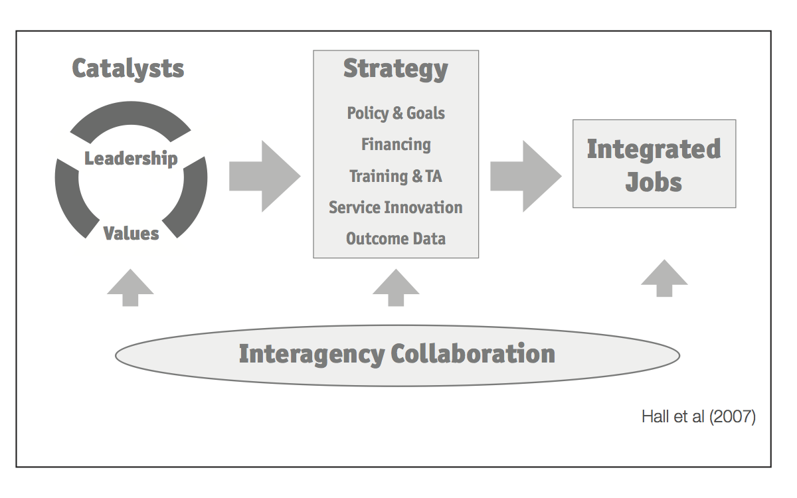
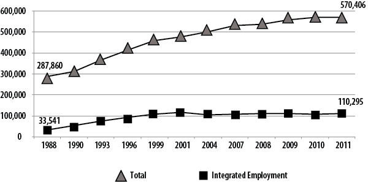
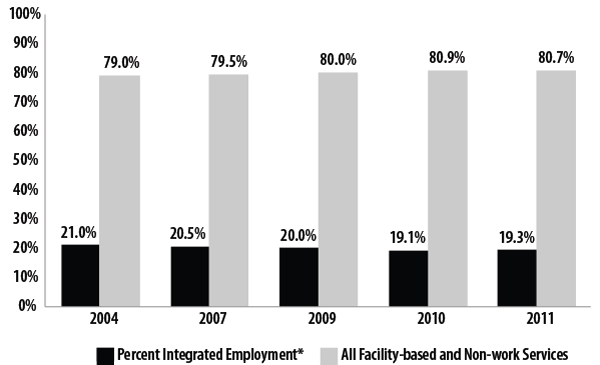
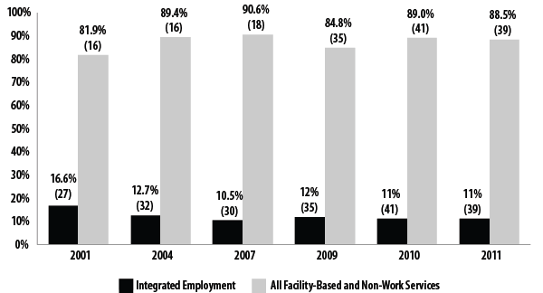
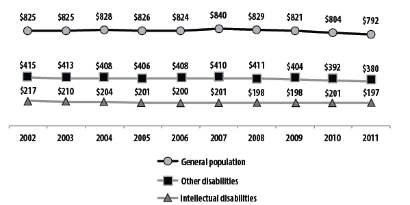
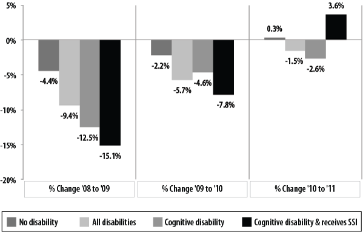
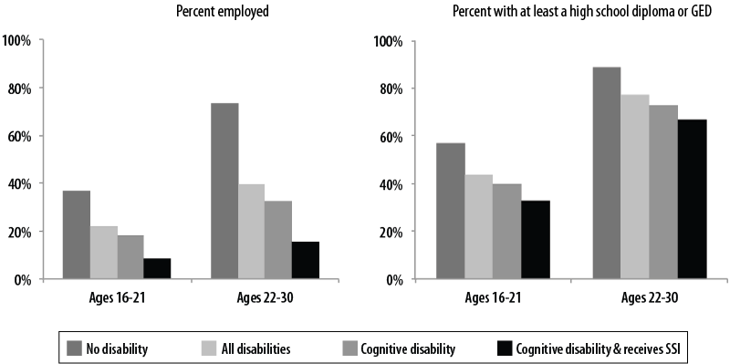
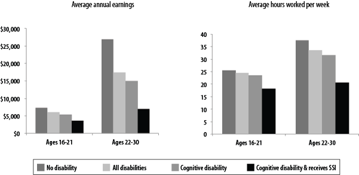
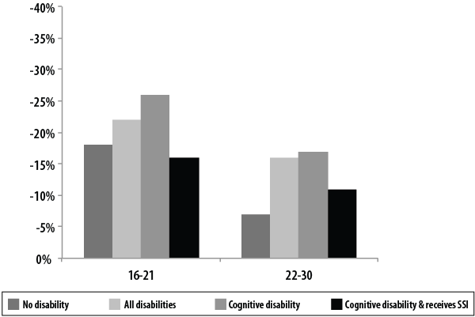
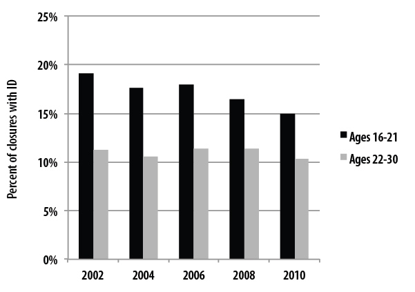

John Butterworth
Allison Cohen Hall
Frank A. Smith
Alberto Migliore
Jean Winsor
Daria Domin
Jennifer Sulewski
Institute for Community Inclusion (UCEDD)
University of Massachusetts Boston
Winter 2013
The StateData employment report is a product of Access to Integrated Employment, a project of the Institute for Community Inclusion (ICI) at the University of Massachusetts Boston, supported in part by the Administration on Intellectual and Developmental Disabilities, Administration for Community Living, U.S. Department of Health and Human Services, under cooperative agreement #90DN0295. The opinions contained in this report are those of the grantee and do not necessarily reflect those of the funders.
The authors would like to express sincere thanks to our collaborators at the National Association of State Directors of Developmental Disabilities Services, including Nancy Thaler, Chas Moseley, and Rie Kennedy-Lizotte. Additionally, the authors acknowledge the contributions of ICI’s entire StateData team, including Bill Kiernan and Suzzanne Freeze, as well as David Temelini and Anya Weber, who assisted in the editing, layout, and production of this report. Lastly, Marcos Elugardo has provided significant database management and assistance, and we thank him for these efforts.
The topical chapter in this year’s report was authored by Jennifer Sulewski and Agnes Zalewska.
Special thanks are directed toward the state administrators and key survey contacts in each state who consistently respond to the ICI’s National Survey of State Intellectual and Developmental Disabilities Agencies’ Day and Employment Services. Their expertise, insights, and assistance have helped to make this report possible.
Institute for Community Inclusion
University Center for Excellence in Developmental Disabilities
University of Massachusetts Boston
100 Morrissey Boulevard
Boston, Massachusetts 02125
ici@umb.edu
www.communityinclusion.org
www.statedata.info
www.selnmembers.org
www.facebook.com/communityinclusion
twitter.com/ICInclusion
Butterworth, J., Hall, A.C., Smith, F. A., Migliore, A., Winsor, J., Domin, D., & Sulewski, J. (2013).StateData: The national report on employment services and outcomes. Boston, MA: University of Massachusetts Boston, Institute for Community Inclusion.
Federal and state policy has paved the way to support opportunities for people with disabilities to have meaningful jobs in their communities (Kiernan, Hoff, Freeze, & Mank, 2011; National Association of Councils on Developmental Disabilities, 2011). With an increasing emphasis on integrated employment and an Employment First philosophy, the nation is poised for transformation that could put Americans with disabilities on a path out of poverty and towards self-sufficiency.
However, there remains a significant gap in employment rates between people with and without disabilities. The 2011 American Community Survey (ACS) estimates that 32.4% of working-age adults with disabilities are employed, compared with 70.5% of people without disabilities (Butterworth et al., 2012). Labor force statistics for October 2012 estimate that 28.4% of working-age adults (16 to 64) with disabilities are employed, compared with 71.0% of those without disabilities (Bureau of Labor Statistics, November 2012). Labor force data also indicate that workers with disabilities have had significantly higher levels of job loss and hardship during the recent recession (Kaye, 2010).
For people with intellectual and developmental disabilities (IDD), the disparity in employment participation widens further. Data from the National Core Indicators Project suggest that, in 2010,only 14.7% of working age adults supported by state IDD agencies participated in integrated employment (Human Services Research Institute, 2012). Community rehabilitation providers (CRPs) reported in 2010 that only 27% of individuals with IDD supported by their organization worked in integrated jobs, including both individual jobs and group supported employment (Domin & Butterworth, 2012). Those who are employed typically work limited hours with low wages (Boeltzig, Timmons, & Butterworth, 2008; Human Services Research Institute, 2012). At the same time, participation in facility-based and non-work services has grown, suggesting that employment services remains an add-on rather than a systemic change (Butterworth, Smith, Hall, Migliore, & Winsor, 2011; Mank, 2003; Domin & Butterworth, 2012).
For over 20 years, the Institute for Community Inclusion (ICI) has been home to Access to Integrated Employment. This national data-collection project on day and employment outcomes, funded by the Administration on Intellectual and Developmental Disabilities, describes the nature of day and employment services for individuals with IDD. Access to Integrated Employment contributes to a comprehensive understanding of the factors that influence employment outcomes at the individual, service-provider, and state-policy level.
This report provides statistics over a 20-year period from several national datasets that address the status of employment and economic self-sufficiency for individuals with IDD. The report contains three sections:
Data from four sources are included: the ICI’s National Survey of State Intellectual and Developmental Disabilities Agencies’ Day and Employment Services (from Fiscal Years 1988, 1990, 1993, 1996, 1999, 2001, 2004, 2007-2011), and datasets from the Social Security Administration, state vocational rehabilitation (VR) programs, and the U.S. Census Bureau (the American Community Survey).
Data continue to highlight the economic disparities between people with and without intellectual and developmental disabilities. State investment in supports continues to emphasize facility-based and non-work services, rather than integrated employment services. In the VR system, earnings of adults with disabilities are substantially lower compared to those in the general population, and weekly earnings of individuals served by VR declined slightly over time. Overall, the findings suggest that across datasets, people with intellectual disabilities experience greater levels of unemployment, underemployment, low wages, and poverty compared to those without disabilities.
Data presented for FY2011 highlight the economic and employment disparities for individuals with IDD. While some data suggest progress (e.g., the positive effect of enrollment in post secondary education on employment outcomes), overall data demonstrate the increasing need for policies and initiatives that prioritize employment. The shift in states toward Employment First policies can make an important contribution to raising expectations, improving outcomes, and increasing self-sufficiency for individuals with intellectual and developmental disabilities.
Federal and state policy has paved the way to support opportunities for people with disabilities to have meaningful jobs in their communities (Kiernan, Hoff, Freeze & Mank, 2011; National Association of Councils on Developmental Disabilities, 2011). With an increasing emphasis on integrated employment, the nation is poised for transformation that could put Americans with disabilities on a path out of poverty and towards self-sufficiency.
However, there remains a significant gap in employment rates between people with and without disabilities. The 2011 American Community Survey (ACS) estimates that 32.4% of working-age adults with disabilities are employed, compared with 70.5% of people without disabilities (Butterworth et al, 2012). Labor force statistics for October 2012 estimate that 28.4% of working-age adults (16 to 64) with disabilities are employed, compared with 71.0% of those without disabilities (Bureau of Labor Statistics, November 2012). Labor force data also indicate that workers with disabilities have had significantly higher levels of job loss and hardship during the recent recession (Kaye, 2010).
For people with intellectual and developmental disabilities (IDD), the disparity in employment participation widens further. Data from the National Core Indicators Project suggest that, in 2010, only 14.7% of working age adults supported by state IDD agencies participated in integrated employment (Human Services Research Institute, 2012). Community rehabilitation providers (CRPs) reported in 2010 that only 27% of individuals with IDD supported by their organization worked in integrated jobs, including both individual jobs and group supported employment (Domin & Butterworth, 2012). Those who are employed typically work limited hours with low wages (Boeltzig, Timmons, & Butterworth, 2008; Human Services Research Institute, 2012). At the same time, participation in facility-based and non-work services has grown, suggesting that employment services remains an add-on rather than a systemic change (Butterworth, Smith, Hall, Migliore, & Winsor, 2011; Mank, 2003; Domin & Butterworth, 2012).
Although resources and priorities have not coalesced nationwide, there is substantial evidence of progress across the country. In Fiscal Year (FY) 2011, CT, GA, NH, OK, and WA all reported that more than 40 percent of individuals receiving day and employment services were receiving integrated employment services. Recently, as an outgrowth of the Access to Integrated Employment project, 27 states have committed to expansion of integrated employment by joining the State Employment Leadership Network (SELN).
The SELN is a membership roundtable co-managed by the ICI and the National Association of State Directors of Developmental Disabilities Services. Its work is guided by the High Performing States Model, which identifies seven elements that transmit and maintain commitment to the goals of community inclusion and integrated employment (see Figure 1). Between 2004 and 2010, the reported percentage of individuals in integrated employment services grew from 32.1% to 36.4% for SELN states, and dropped from 19.9% to 18.4% in 2010 for non-SELN states (SELN, 2012).

On the national level, integrated employment has emerged as a policy priority, both in the disability arena and beyond. The National Governors Association recently announced an initiative to increase employment for individuals with intellectual and other significant disabilities. The Alliance for Full Participation, a coalition of disability advocacy organizations, established employment as the priority for their 2011 national summit, attended by over 1,250 people. This marked the mid-point in a campaign to double employment for people with IDD by 2015 (Walsh, 2011). The National Association of Councils on Developmental Disabilities released a report entitled The Time is Now: Embracing Employment First in conjunction with the AFP summit.
Additionally, at least 34 states have some form of Employment First initiative, which is nationally recognized as a policy path towards greater community employment for people with IDD. Recently, the National Council on Disability (NCD) issued a report on subminimum wage and supported employment. The report offers a systems change approach and recommends a phase-out of sub-minimum wage programs, emphasizing information-sharing to workers, peer support, and incentives to states and CRPs to expand employment opportunities (NCD, 2012). The National Disability Rights Network (2012) has also advocated against use of sheltered workshops and payment of sub-minimum wage to people with disabilities.
Employment supports are provided within a context of state and federal disability policy, workforce development policy, income maintenance and healthcare policy. These include supports related to transportation, housing, welfare, and childcare. Core supports are funded by state IDD and vocational rehabilitation (VR) agencies, as well as local education agencies, and employment supports are provided by a network of over 8,000 CRPs.
State IDD agencies. State IDD agencies remain the primary source of long-term funding and service coordination. They provide, fund, and monitor a wide range of services, including employment supports, facility-based options (sheltered workshops and non-work day habilitation programs), community integration services, and self-directed options.
State vocational rehabilitation (VR) agencies. State VR agencies provide services to over 1 million people annually, closing approximately 600,000 cases in each fiscal year. Approximately 8.2%, or 48,540, of those case closures can be identified as individuals with IDD, a person with a primary or secondary impairment code of intellectual disability (formerly categorized as mental retardation).
Policy under the Medicaid HCBS program requires that individuals access VR for employment support prior to receiving Medicaid waiver funding. However, collaboration is impeded by a wide range of systemic barriers, including lack of agreement about target populations and differences in culture and resources (Timmons, Cohen, & Fesko, 2004).
One-Stop Career Centers. Established and supported under the Workforce Investment Act, these centers, also known as American Job Centers, provide an underused resource for individuals with IDD and other disabilities. In 2010, 617,314 individuals with disabilities registered as job seekers for Wagner Peyser-funded One-Stop services (U.S. Department of Labor, Employment & Training Administration). Six hundred and ninety-nine individuals with ID who closed out of state VR services in 2010 were identified as referrals from One-Stop Career Centers.
Medicaid. Medicaid is both a primary source for health care for individuals with IDD and the largest federal source of funds for day and employment services under the Home and Community Based Services waiver program. While historically there has been no clear preference for integrated employment in Medicaid-funded services, in 2011 the Centers for Medicare and Medicaid Services (CMS) issued a policy bulletin that provides guidance for the development of employment and employment related service definitions in 1915(c) waivers. This guidance establishes individual integrated employment as a priority goal (Centers for Medicare and Medicaid Services, 2011). Over the past decade, CMS has expanded its focus on employment through the Medicaid Infrastructure Grant program and expansion of state Medicaid buy-in programs.
Social Security. Social Security Administration (SSA) work incentives, such as the Plan for Achieving Self-Support, Impairment Related Work Expenses, and the Student Earned Income Exclusion, support employment by allowing individuals who receive Supplemental Security Income (SSI) to exclude money, resources, and certain expenses from total earned income. The SSA also administers the Ticket to Work program, which provides beneficiaries with a ticket to purchase VR, employment, and other support services from any participating employment network or state VR agency (Social Security Administration, n.d.). Despite the SSA’s initiatives, work incentives and the Ticket to Work program remain underused (Butterworth et al, 2012).
Community Rehabilitation Providers (CRPs). CRPs and their staff are the primary source of day and employment supports for people with IDD. The ICI maintains a national provider list, and estimates that over 8,000 CRPs nationwide offer vocational services to individuals with disabilities. The majority (over 70%) of those served by CRPs are people with IDD (Metzel et al., 2007; Domin & Butterworth, 2012). Over two thirds of CRPs provide both work and non-work services (Metzel et al., 2007; Domin & Butterworth, 2012).
Despite state and federal initiatives, policy change, and emerging leadership, widespread integrated employment for people with IDD has not occurred. Nationally, an estimated 19.3% of individuals receiving day supports from state IDD agencies participated in integrated employment services during FY2011. This number has slowly declined after reaching a peak of almost 25% in FY2001. Overall growth in integrated employment slowed following the end of the RSA Supported Employment Systems Change grants in the mid 1990s (Butterworth et al., 2012; see Figure 2). At the service delivery level, best practices evolved, including person-centered career planning, customized employment, job creation, and self-employment, but adoption of these practices is limited (Migliore et al., 2012). Continuing challenges for systems change include:
State and federal policy do not consistently prioritize employment. While more individuals with IDD are in integrated employment, the number participating in facility-based and non-work services has grown more rapidly. Despite investments in education, income supports, and healthcare for Americans with disabilities, few of these resources encourage or reward integrated community employment (Niemiec, Lavin, & Owens, 2009). Additionally, CRPs that have closed a facility-based program report that state agencies are rarely a catalyst for change (Butterworth, Fesko, & Ma, 2000).
Expansion of community-based non-work (CBNW) services has competed with integrated employment (Sulewski, 2010). Twenty-seven state IDD agencies reported supporting individuals in CBNW services in FY2011 and indicated that 45.5% of those served participated in CBNW in FY2011. Respondents to the ICI’s 2010–2011 National CRP Survey reported a more modest but still meaningful role for CBNW services, indicating that 16.4% of individuals with IDD participated (Domin & Butterworth, 2012). CBNW is loosely defined with respect to requirements, activities, populations served, and goals (Sulewski, Butterworth,& Gilmore, 2008).
CRPs have not reallocated resources to community employment. Respondents to the ICI’s 2010–2011 National CRP Survey reported that 19% of individuals with IDD participated in individual employment services, a slight increase from the 18% reported in 2002–2003. An additional 9.5% of individuals were reported to be working in mobile work crews or enclaves. The majority of individuals participated in facility-based or non-work services (25.2% and 43%, respectively). The largest growth was in non-work services (facility-based or community-based). Between 2002 and 2010, participation in non-work services grew from 33% to 43%, offset by a decline in the percentage of individuals in facility-based work.
Funding mechanisms vary across states and do not always reflect policy priorities. In an environment of increasing fiscal limitations and individualized budgeting, there is a growing need for state employment systems to discuss rate-setting and funding. Analysis of five states’ employment funding structures suggests there is no “best” approach, but there are several key elements for success (Hall, Freeze, Butterworth, & Hoff, 2011). Rate and contracting structures should be selected with a clear intent regarding goals. Unambiguous definitions and service categories should also reflect these priorities. States with policy and funding alignment pay more for desired outcomes (a community job), and less or nothing at all for outcomes that are not a priority.
Work with states suggests that changes made to funding rates should be based in the real-world costs of providing high-quality integrated employment, and should not solely rely on the typical approach of revising funding based upon historical costs. When considering states’ funding methodologies, all state agencies that pay for employment services should be involved in the discussion. Past experience has shown that making fragmented changes to one or two service rates is not sufficient to address the underlying funding issues faced by providers and service recipients. Consideration of the entire funding system helps ensure that individuals receive services that support a whole-life, individualized, community-centered approach to employment.
Best practices in job supports are not consistently implemented. Research has investigated competencies and training needs of direct support professionals (DSPs) in residential settings (Larson & Hewitt, 2005; Larson et al., 2007). However, less has been done to examine the same issues regarding DSPs who assist job seekers. These DSPs face complex responsibilities, ranging from meeting business demands to addressing the personal needs of people with disabilities (Test, Flowers, & Hewitt, 2004).
Research suggests that employment specialists inconsistently use established promising practices, including spending time with individuals in community settings, working with families, and negotiating job responsibilities with an employer (Migliore et al., 2012; Migliore, Hall, Butterworth, & Winsor, 2010). Findings also suggest that job developers have limited opportunity for effective professional development, including both formal and informal opportunities for learning (Hall, Bose, Winsor, & Migliore, under review), though employment specialists who receive training and mentorship do improve the number and quality of the jobs they develop (Butterworth et al., 2012).
Individual employment outcomes have not improved. Data consistently show that the majority of individuals with IDD work part-time in entry-level positions, have low annual income, and have limited access to employee benefits (Human Services Research Institute, 2012; Boeltzig, Timmons, & Butterworth, 2008; Mank, Cioffi, & Yovanoff, 2003). Outcomes have also declined for individuals with IDD served by state VR agencies. Between 1991 and 2005,weekly hours worked at closure declined from 29 to 25, and weekly wages declined from $195 to $179 (Migliore & Butterworth, 2008). Schur, Kruse, Blasi, and Blank (2009) found that employees with disabilities have less job security, receive less company-sponsored training, and have lower rates of participation in decision-making when compared to workers without disabilities.
Transition-age youth continue to face challenges. Data on youth and young adults with disabilities indicate that, similar to the adult population, they lag behind youth without disabilities in measures of education, employment, and economic well-being. Nationally, compared to their peers without disabilities, students with disabilities are less likely to receive a regular high school diploma, drop out twice as often, and enroll in and complete postsecondary education programs at half the rate (Chapman, Laird, & KewalRamani, 2010).
At two years post-high school, four in ten youth with disabilities are employed, compared to six in ten youth in the general population (Chapman, Laird, & KewalRamani, 2010). Students with IDD in particular have the lowest rates of education, work, and preparation for work after high school. Sulewski, Zalewska, and Butterworth (2012) found that outcomes for youth with IDD lag behind youth without IDD, and that this gap increases with age. Poor employment outcomes for youth with IDD are a result of a confluence of issues, including lack of emphasis on integrated employment outcomes within state IDD agencies (Butterworth et al., 2011), inadequate collaboration between the adult disability and education systems (Whelley, Hart, & Zaft, n.d.), limited vocational experiences in school (Carter, Austin, & Trainor, 2011), inadequate support to transition directly to jobs in the community (Certo et al., 2003), and limited development of self-determination and career-related decision-making skills (Shogren & Plotner, 2012).
While state IDD agencies widely view transition as an important time to establish a pathway into employment, National Core Indicator Project data suggest that only 6% of individuals ages 16–21 and 17% of individuals ages 22–30 are working in integrated employment. However, trend data suggest that participation in employment is on the decline for all young adults ages 16–21, including those without disabilities.
This report provides statistics over 20 years from several existing national datasets that address the status of employment and economic self-sufficiency for individuals with intellectual and developmental disabilities. The authors use abbreviations for both intellectual disability (ID) and intellectual and developmental disabilities (IDD) in this report. We do this because data sources vary in the specific target groups that can be described.
We provide a comprehensive overview that describes national trends in employment for people with IDD, and the appendix provides individual state profiles with data from several sources. These include the ICI’s National Survey of State Intellectual and Developmental Disabilities Agencies’ Day and Employment Services (from FY1999, 2001, 2004, 2007–2011), and datasets from the Social Security Administration, vocational rehabilitation, the Bureau of Labor Statistics, and the American Community Survey. The appendix provides a state-by-state analysis of trends across each dataset.
The topical chapter examines national data on educational, employment, and economic outcomes for youth and young adults with IDD over the years 2000–2010. This chapter presents summaries, analyzes trends over time, and makes recommendations to improve outcomes.
*The National Survey of State Intellectual and Developmental Disabilities Agencies’ Day and Employment Services.**
This survey is part of a longitudinal study commissioned by the Administration on Intellectual and Developmental Disabilities to analyze community-based day and employment service trends between FY1988 and 2011 for individuals with IDD and closely related conditions. Between 1988 and 2004, the survey was administered on a semi-annual basis; starting in 2007, information has been collected annually. The most recent version of the survey is focused on state IDD agency data for FY2011.
The survey is designed to provide the following information:
The survey was developed with input and field-testing support from state IDD agency administrators. Core variables include the number of people served (total and by day and employment service categories), number of people on waiting lists, and expenditures by service and total funding by source. All questions focus on community-based day or employment services monitored by the state IDD agency, including services funded by another state agency (such as the Medicaid agency), even if the IDD agency does not provide or directly contract for the service. In addition, this year’s survey included a youth-specific topical module. The questions in this module focused on numbers served, as well as policies, services, initiatives, and collaboration with other agencies.
In 1996, the new category of community-based non-work service was added to the survey. The most recent changes to the survey occurred in 2010. States are now asked not only to provide the number of individuals in each service category, but also to indicate if they provided each service. Additionally, states are now asked specific questions about the number of individuals that they serve who are working for pay in jobs in the community, in order to distinguish between services and employment outcomes. Beginning in FY2001, states were offered the opportunity to complete the survey using a secure website. Each state’s responses from the previous year are listed on the website for reference and updating if necessary.
The survey was most recently administered in June 2012 to IDD agencies in all 50 states and the District of Columbia. The agency director from each state and the staff members who responded to the previous survey were contacted to ensure consistency in the data reported. Initial contact was made by email, and follow-up was completed via email and telephone. States were asked to complete the most recent survey using data from FY2011.
The survey home page provides general information and instructions for completing the survey. Additionally, instructions and guidance for responding to the survey questions are included within each question. The survey requests data on the total number of individuals served; however, if a state does not have the capacity to adjust for individuals who enter or exit the system during a fiscal year and can only provide the number served at the end of the fiscal year (or at some other specific point in time), there is a place on the survey to provide this information.
Each step of the survey provides an opportunity for states to enter explanatory comments on their data. The final step of the survey offers states the opportunity to make suggestions for how the survey could be revised in the future. States are also asked to identify the information source used to provide service category data. There is a definitions page that can be referred to from any page of the survey. A summary of the service category definitions can be found in Table 1. After a state has finalized its response to the survey, ICI staff review the data and follow up with states whose data shows an unexpected increase or decrease in the total number served, number served in a service category, or total funding.
| Type of Setting/ Service: | Work | Non-Work |
|---|---|---|
| Community | Integrated employment: Integrated employment services are provided in a community setting and involve paid employment of the participant. Specifically, integrated employment includes competitive employment, individual supported employment, group supported employment, and self-employment supports. | Community-based non-work: Community-based non-work includes all services that are focused on supporting people with disabilities to access community activities in settings where most people do not have disabilities. It does not include paid employment. |
| Facility | Facility-based work: Facility-based work includes all employment services that occur in a setting where the majority of employees have a disability. These activities occur in settings where continuous job-related supports and supervision are provided to all workers with disabilities. This service category is typically referred to as a sheltered workshop, work activity center, or extended employment program. | Facility-based non-work: Facility-based non-work includes all services that are located in a setting where the majority of participants have a disability and does not involve paid employment of the participant. |
This report used regression analysis to estimate the total number of individuals served by state IDD agencies and the number of individuals served in integrated employment when these figures were not reported. To increase stability of the estimates for states that did not report these data points, data from the literature was added, with FY2006 and FY2009 data drawn from the most recent literature available (Braddock et al., 2011). This procedure was adopted for ten states.
Estimates were also computed for missing data regarding community-based non-work services and facility-based work and non-work services. For these variables, however, estimates were only accepted for missing data points that were between two valid data points in each time series, and only if the missing data points did not outnumber the valid data points.
Rehabilitation Services Administration 911 (RSA-911) Database.
The RSA-911 is a public access database that captures individual characteristics, services provided, and employment outcomes at the point of closure from VR services. Records are at the individual level, covering over 600,000 case closures per year.
| Term | Explanation |
|---|---|
| Closure | Data in the RSA-911 are collected at the time of closure (conclusion) of VR services. The VR closure categories used in this report include closure with an employment outcome after receiving services (formerly Status 26) and closure without an employment outcome after receiving services (formerly Status 28). |
| Successful rehabilitation | Closure with an employment outcome including integrated employment (including supported employment), self-employment, state-agency-managed business enterprise, homemaker, and unpaid family worker. |
| Rehabilitation rate | The percentage of individuals receiving services who achieve a successful rehabilitation. Calculated as: closures with an employment outcome / closures with an employment outcome + closures without an employment outcome after receiving services. Individuals with a case that was closed prior to development of an Individual Plan for Employment are not included in this calculation. |
| Supported employment services | Supported employment may be funded from Title VI-b funds, funds dedicated to supported employment under the Rehabilitation Act, or general rehabilitation funds. |
For the purposes of this report, a person was considered to have an intellectual disability (ID) if code 25 (mental retardation in the RSA-911 dataset) was reported as the cause of either a primary or secondary impairment to employment. This is different from previous reports, in which we included people with other developmental disabilities, such as autism, cerebral palsy, and epilepsy. In addition, in previous editions we focused exclusively on the primary, rather than primary and secondary, cause of impairment.
American Community Survey. The American Community Survey (ACS) is a national survey designed by the U.S. Census Bureau to better understand changing communities. The ACS collects information from all 50 states and D.C. on topics such as disability, age, race, income, commute time to work, home value, veteran status, and other demographic and personal data (www.census.gov). To gather information on people with disabilities, the Census Bureau asks six questions on long-lasting conditions and functional impairments. Any person who indicates having at least one of these conditions or functional impairments is coded as having a disability. The individual items used to collect these data points are outlined in Table 3.
Due to changes implemented in the ACS beginning in 2008, data for people with disabilities for 2007 and earlier years should not be compared with data beginning in 2008. The sensory disability item used from 2000–2007 was eliminated, and two distinct items for visual and hearing disabilities were added in 2008. The employment disability variable that was used from 2000–2007 was eliminated from the survey in 2008. Additional changes in wording for other disability items included removing the duration of impairment from some questions and adding the term “serious” to focus on long-term/more severe impairments.
| Term | Explanation |
|---|---|
| Employment rate | The percent of civilian, non-institutionalized working-age (16–64 years old) individuals who have a job. |
| Disability categories |
The 2000 through 2007 ACS classifies individuals as having a disability based on: 1) Presence of a long-lasting condition in one or both of the following areas:
And/or 2) Difficulty doing any of the following activities because of a physical, mental, or emotional condition lasting six months or more:
The 2008 and 2009 ACS classify individuals as having a disability based on: 1) Answering affirmatively to one or more of the following items: Is this person deaf or does he or she have serious difficulty hearing (hearing disability)?
|
Social Security Administration (SSA).
These data are abstracted from the Supplement Security Income (SSI) Annual Statistical Report. The SSA reports work-incentive participation and the number of individuals receiving SSI who are working. Beginning with the 2010 SSI Annual Statistical Report, tables showing data by diagnostic group provide more specific details for mental disorders in these categories: autistic disorders, developmental disorders, childhood and adolescent disorders not elsewhere classified, intellectual disability, mood disorders, organic mental disorders, schizophrenic and other psychotic disorders, and all other mental disorders. Data from previous years use three categories for mental disorders: retardation, schizophrenia, and other.
| Program | Definition |
|---|---|
| Plan for Achieving Self Support (PASS) | Allows a person with a disability to set aside income or resources to support achieving a specific work goal. Money set aside under a PASS plan is excluded both as current income and from the SSI resource limits. |
| Impairment-Related Work Expense (IRWE) | Allows people to exclude the cost of certain impairment-related services or items needed to earn income when determining the beneficiary’s current earned income for SSI eligibility and benefits. |
| Section 1619(a) | Allows people with disabilities to continue receiving SSI income even if their earned income is at Substantial Gainful Activity levels, i.e., the amount that would normally make them ineligible for SSI. |
| Section 1619(b) | Allows individuals to continue receiving Medicaid benefits if their earnings disqualify them from eligibility for SSI cash payments but are not enough to afford medical insurance. |
State Demographics. State demographics are from multiple data sources. State population is taken from the U.S. Census website (www.census.gov). Unemployment data is taken from the Bureau of Labor Statistics website http://www.bls.gov.
The National Survey of State Intellectual and Developmental Disabilities Agencies’ Day and Employment Services (FY1999–2011) The data reported here are the core elements of the Institute for Community Inclusion’s National Survey of State Intellectual and Developmental Disabilities Agencies’ Day and Employment Services. These data focus on participation in integrated employment, community-based non-work, and facility-based services. Data are solicited from all 50 states and the District of Columbia. The number of reporting states varied from 37 to 45 over the time studied (1999–2011). The researchers calculated national estimates for the total number of people served by state IDD agencies, as well as the total number of people who received integrated employment services. For some states, data reported by service setting represent duplicated counts because individuals were served in multiple settings. For these states, the percentage served across settings may add up to more than 100%. Other services, including services for individuals who are elderly, are not reported. Major findings include:
National estimates suggest that there has been modest growth in the number of individuals in integrated employment since 1988.
The estimated percentage of individuals participating in integrated employment services was 19.3% in FY2011.
Growth in community-based non-work services has continued for states that report on this service.
There is large variation across states in participation in integrated employment.
Figure 3: Trend Line for Estimated Total Number of People Served by State IDD Agencies and Estimated Number Served in Integrated Employment

In FY2011, an estimated 570,406 individuals received day or employment supports from state IDD program agencies. This number grew from 458,650 in FY1999. The estimated number of individuals in integrated employment services increased from 108,296 in FY1999 to 110,295 in FY2011. State investment continues to emphasize facility-based and non-work services, rather than integrated employment services.
Figure 4 shows trends in the percentage of people served in integrated employment and facility-based and non-work settings between FY2004 and FY2011. In FY2011, an estimated 19.3%of individuals receiving day supports from state IDD agencies received integrated employment services. These data demonstrate a decline in the estimated percentage of people served in integrated employment services (from 24.6% in 2001), suggesting that the growth seen in supported employment between the mid-1980s and mid-1990s has not continued.
Figure 4. Estimated IDD Agency Service Distribution by Year 
Percents displayed represent estimates for the number of people served in integrated employment nationally (in all 50 states and Washington, DC).
The data also demonstrate an increase in the percentage of people served in facility-based and non-work settings. Variability in the number of states that are able to report data in these three individual service categories (facility-based work, non-work, and integrated employment) limits our ability to pinpoint the specific setting in which growth is occurring. However, analysis using data from states that are able to report data in each of the three service categories suggests that participation in facility-based work has remained stable or declined slightly, and the percentage of individuals served in non-work settings is increasing.
State efforts to increase the number of individuals in integrated employment are expanding through investments such as Employment First initiatives, membership in the State Employment Leadership Network, and participation in the Alliance for Full Participation, although the results of these efforts are not yet clear in national trends. Data were examined for 37 states that consistently provided data on the total number of individuals served and the number of individuals in integrated employment services. Of these 37 states, seven reduced the total number of individuals they served between 2001 and 2011, and the average reduction was 4,465 individuals (range: 242–10,863); 30 states increased the total number served, and the average increase was 3,344 (range: 146–24,877).
Twenty-one of these 37 states reduced the number of individuals receiving integrated employment services, and the average reduction was 1,077 (range: 12–5,441). However, in the 16 states that increased the number of individuals in integrated employment, the average increase was 958 individuals (range: 133–3,367). States that increased the number of individuals served in integrated employment by more than 500 individuals between 2001 and 2011 were: CT, LA, MA, MD, NC, OK, OR, and WA. Each of these states has engaged in strategic efforts and systematic changes to their service delivery system to make integrated employment the preferred service outcome for adults with IDD in their state.
States vary in their ability to report on funding for day and employment services by service setting. Figure 5 shows trends in funding allocation by service setting for states that reported these monetary figures. Facility-based and non-work settings continue to make up the largest percentage of expenditures for day and employment services. Collectively, states that reported funding facility-based work and non-work services (n=39) allocated 88.5% of the funding for all day and employment to services in these settings in FY2011. In contrast, states that reported funding for integrated employment (n=39) allocated 11% of the funding for all day and employment services to integrated employment services in FY2011.
There has been a net decrease in the percentage of reported funds allocated toward facility-based services since 1999. However, there has been little fluctuation over time in the percentage of funding allocated toward integrated employment, which peaked in 2001 at 16.6%, but otherwise ranged between 9.6% and 12.7% in all other years since 1999.
Figure 5: Percentage of Total Funding Allocation by Year (Number of States Reporting in Parentheses) 
There are more individuals participating in integrated employment services than are working in the community. In FY2009, the survey began asking states about their ability to provide data on the number of individuals working for pay in integrated community jobs, including competitive employment, individual supported employment, group supported employment, and self-employment. These questions were added because the percentage of individuals in integrated employment services is not analogous to the number of individuals working for pay in the community. The percentage in integrated employment services reflects time when individuals are looking for work or between jobs, and in some cases, integrated or supported employment services may includes other activities.
While more than half of states (n=27) that responded to the survey reported collecting data on the number of individuals working for pay in the community, many states do not engage in this practice. One characteristic of states that support a high percentage of individuals in integrated employment services is the presence of a comprehensive employment outcome data-collection system (Hall et al., 2007).
Twenty-six states were able to report on the total number of individuals served in day and employment services who were working for pay in jobs in the community. The total number of individuals who worked in paid integrated employment in FY2011 as reported by these 26 states was 70,797. In these 26 states, 27.5% of individuals who received any day and employment service were working in the community in integrated jobs. These data indicate that there are some individuals with IDD working for pay in the community who are not receiving paid employment supports from their state IDD agency, but are receiving other non-integrated employment day services.
States were also asked how many of the individuals participating in integrated employment services were working for pay in the community. Twenty-seven states were able to report on the total number of individuals receiving integrated employment services who are working in paid integrated employment positions in FY2011 (n=55,834).In these 27 states, 85.5% of individuals who receive integrated employment services are working in the community in integrated jobs. Nationally, the number of individuals earning wages who receive integrated employment services from their state IDD agency is lower than the total number receiving these services. In other words, not every person counted as receiving integrated employment services is working for pay.
Community-based non-work (CBNW) continues to grow. First added to the survey as a service option in FY1996 in response to state feedback, the number of states reporting providing CBNW services has grown from 18 in FY1996 to 27 in FY2011. Nationally, reported participation in CBNW has grown steadily for states that report it as a service, from 18.7% in FY1999 to 45.5% in FY2011. CBNW services accounted for 52% of state IDD agency expenditures for FY2011, for states that reported expenditures for this service (n=24).
The rapid growth in CBNW services may reflect a growing emphasis on community presence, although the nature of the service that is being reported and the contribution of this service to community participation remain unclear. Data reported by CRPs in a national survey suggest that only 16.4% of individuals with IDD participate in CBNW (Domin & Butterworth, 2012). While CRP and IDD agency responses are not directly comparable, and may reflect differing approaches to reporting duplication of service, the disparity raises concerns about how state agencies are defining and categorizing services. There is currently a limited amount of data on the structure, activities, and outcomes of this service, and states have not established clear service expectations or quality-assurance strategies (Sulewski, Butterworth, & Gilmore, 2008; Sulewski, 2010).
While some states report service requirements for how much time CBNW participants spend in the community, it is possible that in some cases states have reclassified services from facility-based to community-based as the emphasis on community participation grows, even though substantial time is still spent in facility-based settings. As the prevalence of CBNW services grows, additional research is needed on whether these services enhance or impede integrated employment outcomes, and how CBNW services contribute to meaningful daytime activities for individuals with IDD.
Overall total funding from state, county, and local sources has decreased slightly, though there continues to be a substantial investment of this funding in community-based services. State, county, and local IDD dollars are one of the largest sources of funds for day and employment services, representing 26.8% of all funding. As a funding source that is directly controlled within each state, this is also one of the most flexible sources of dollars for day and employment services.
States vary in their ability to report state, county, and local spending on IDD services. As the number of states able to report these figures increases, it will be interesting to examine both the cross-sectional and trend data for this type of funding. For states that have been able to report these figures, the allocation of these funds has varied based upon year and service category: integrated employment, community-based non-work (CBNW), facility-based work, and facility-based non-work.
Total reported state, county, and local IDD dollars have decreased slightly, from $1,480,531,831 (n=25) in 1999 to $1,287,718,170(n=28) in 2011. The percentage of state, county, and local funds allocated to all facility-based services declined from 65% in 1999 to 48% in 2011, but did not result in a substantial increase in funds being allocated toward integrated employment.
Instead, dollars have shifted toward CBNW services. Reported dollars for CBNW increased from $279,490,187 (n=13) to $466,679,395 (n=14) between 1999 and 2011. This change coincided with a decrease in the funds allocated toward facility-based non-work services, from $470,893,634 (n=16) to $356,111,427 (n=18). One potential explanation for the significant redistribution of funds toward CBNW services is that traditional facility-based non-work services are being rebranded as CBNW.
Since 2004, there has been an increase in the percentage of state, county, and local IDD funds allocated toward all community-based services. While this could be an indication that states are placing a greater emphasis on community inclusion, the fact remains that state, county, and local IDD dollars are increasingly being spent on non-work services and not integrated employment.
The trend toward CBNW services raises concerns about the clarity of the service system’s goals for community employment. It is highly likely, due to the lack of specificity of the goals of CBNW services (Sulewski, Butterworth, & Gilmore, 2006), that as funds transition to the community, non-work services are seen as an alternative to (rather than a complement to or an avenue towards) integrated employment services. Sulewski, Butterworth, and Gilmore (2008) recommend that states use CBNW services as a supplement to, rather than a substitute for, integrated employment services. States need to clarify the intent and goals of CBNW services and their relationship to integrated employment.
There has been a decline in the provision of facility-based work services for people with IDD. Data over the past ten years from 17 states demonstrate that the percentage of individuals who have received facility-based work services declined from 36.0% in FY1999 to 25.9% in FY2011. The number of individuals reported in facility-based work also declined during this period (Table 6). However, there was not a corresponding increase in integrated employment participation in these states, and the percentage of people reported in integrated employment declined slightly, from 26.1% to 24.9%.
During this same time period in these 17 states, non-work services have continued to grow at the expense of integrated employment. The percentage of individuals receiving non-work services increased from 41.8% in FY1999 to 59.7% in FY2011—an increase of more than 55,000 individuals in these 17 states. These data demonstrate that, despite the decrease in facility-based work services, state IDD agencies need to place a greater emphasis on integrated employment outcomes.
| Number Served | Percentage by Service | ||||||
|---|---|---|---|---|---|---|---|
| Year | Total served | Integrated employment | Facility-based work | Non-work services | Integrated employment | Facility-based work | Non-work services |
| 1999 | 168,419 | 43,999 | 60,660 | 70,396 | 26.1% | 36.0% | 41.8% |
| 2001 | 169,511 | 42,445 | 57,069 | 74,812 | 25.0% | 33.7% | 44.1% |
| 2004 | 183,583 | 41,484 | 53,864 | 90,993 | 22.6% | 29.3% | 49.6% |
| 2007 | 188,965 | 43,483 | 51,647 | 95,628 | 23.0% | 27.3% | 50.6% |
| 2008 | 189,947 | 48,999 | 51,782 | 95,679 | 25.8% | 27.3% | 50.4% |
| 2009 | 203,190 | 48,406 | 50,365 | 103,770 | 23.8% | 24.8% | 51.0% |
| 2010 | 207,066 | 50,071 | 69,907 | 114,467 | 24.2% | 33.8% | 55.3% |
| 2011 | 211,674 | 52,759 | 54,775 | 126,366 | 24.9% | 25.9% | 59.7% |
In 2001, the Rehabilitation Services Administration formally eliminated sheltered employment as a successful outcome for clients of state VR agencies. Since then, IDD agencies have been among the few state-level agencies that have continued to authorize and fund facility-based work outcomes. Several factors may influence participation in facility-based work for individuals with IDD, including state IDD agency funding and policy priorities, growth in community integration service options, selection of services at transition by individuals and their families, and the priority placed on integrated employment outcomes by state systems.
In this section, we describe the employment and postsecondary education outcomes of all adults with intellectual disabilities (ID) who exited the vocational rehabilitation (VR) program during fiscal years 2002 to 2011. To provide some context, we compare the findings with the corresponding outcomes of people with other disabilities. Finally, we describe selected employment outcomes disaggregated at the state level for FY2011.
Major findings regarding people with intellectual disabilities included the following:
Over time, fewer people exited the VR program. As Table 7 shows, in 2011, a total of 47,812 people with intellectual disabilities exited the VR program. This figure was lower than in 2010 and the lowest reported during the past ten years. The highest figure was reported in 2003, when 69,645 people with intellectual disabilities exited the program. The corresponding figure for people with other disabilities was 494,273 in 2011.
| Total closures | Received services | Rehabilitation rate | ||||||
|---|---|---|---|---|---|---|---|---|
| ID | Other | ID (%) | Other (%) | ID (%) | Other (%) | |||
| 2002 | 59,865 | 518,022 | 73 | 61 | 57 | 56 | ||
| 2003 | 69,645 | 568,882 | 60 | 57 | 55 | 54 | ||
| 2004 | 57,113 | 533,137 | 72 | 64 | 55 | 52 | ||
| 2005 | 56,332 | 498,250 | 71 | 63 | 55 | 55 | ||
| 2006 | 56,487 | 500,072 | 71 | 62 | 56 | 56 | ||
| 2007 | 53,620 | 491,016 | 70 | 62 | 58 | 57 | ||
| 2008 | 53,974 | 506,004 | 69 | 62 | 56 | 55 | ||
| 2009 | 49,382 | 488,824 | 66 | 59 | 53 | 53 | ||
| 2010 | 49,697 | 511,441 | 65 | 58 | 48 | 49 | ||
| 2011 | 47,812 | 494,273 | 66 | 60 | 51 | 51 | ||
About the same percentage of people received services compared to 2010, but this percentage was lower compared to earlier years. Receiving services is the first step toward an employment outcome. As Table 7 shows, about 66% of the people with intellectual disabilities who exited the program in 2011 received services, a lower figure compared to earlier years. For instance, in 2002, about 73% of individuals with ID received services.
Nevertheless, the percentage of people with intellectual disabilities who received services was consistently higher compared to the corresponding figure for people with other disabilities across the ten years. In 2011, only 60% of people with other disabilities who exited the program received services, and the highest percentage was only 64%, in 2004. The most frequent reasons for people with intellectual disabilities to exit the program without receiving services (for 2011) included refusal or lack of cooperation (47%), inability to locate applicant (24%), ineligibility (8%), or other non-specified reasons (20%). People with other disabilities reported similar reasons for exiting the program without receipt of services.
The rehabilitation rate increased compared to 2010, but was still lower than in earlier years. The rehabilitation rate is the percentage of people who gained integrated employment out of the total number of people who received services. As Table 7 shows, in 2011, 51% of people with ID who received services exited with an integrated employment outcome, compared to 48% the year before. In earlier years, however, higher percentages of people with intellectual disabilities gained integrated employment, reaching a high point of 58% in 2007. Overall the percentages of people with intellectual disabilities who gained integrated employment were similar or slightly greater than those reported for people with other disabilities: 51% in 2011, down from a peak of 57% in 2007.
Weekly wages declined slightly over time. As Figure 6 shows, inflation-adjusted weekly wages of people with intellectual disabilities who exited with an integrated employment outcome in 2011 were slightly lower compared to previous years. The weekly wages of people with other disabilities also declined over time, though this group earned almost twice compared to their peers with ID in 2011 ($380 and $197, respectively). People without disabilities reported the highest wages across the years examined.
Another way of looking at earnings is to report the percentage of people who made a set wage, for example $10 per hour, out of the total number of people employed. In 2011, about nine percent of people with intellectual disabilities earned more than $10 per hour, whereas the corresponding figure for people with other disabilities was 39%.
Figure 6. Weekly Wages in 2011 Dollar Value 
Weekly work hours remained the same compared to 2010, but were lower compared to earlier years. In 2011, people with intellectual disabilities who exited the program with integrated employment worked an average of 24 hours per week, which was the same amount of hours reported in the previous two years. From 2002 to 2004, however, work hours were slightly higher, reaching 26 hours per week. Overall, people with other disabilities reported more weekly work hours (32 hours in 2011, which was the same amount of hours reported in the previous two years, but less than 34 hours, which was reported in earlier years). While only about 50% of people with intellectual disabilities worked more than 20 hours per week, about 77% of people with other disabilities reported working more than 20 hours per week in 2011.
Gaining employment took about the same number of days from application, compared to 2010, but it took longer compared to earlier years. Long-term unemployment may erode job seekers’ engagement in the job search, which can threaten the likelihood of success. In 2011, people with intellectual disabilities took about 674 days to gain integrated employment, from application. This is just four days more than reported in 2010, but a longer span of time compared to earlier years. The shortest amount of time to an integrated employment outcome was reported in 2003, when finding employment took about one month less than in 2011 (637 days).
With respect to the amount of time it takes to gain employment, individuals with ID fared better than those with other disabilities. In 2011, people with other disabilities reported 725 days from application to closure, and the shortest amount of time was reported in 2003 with 691 days.
Another way of looking at this outcome is to examine the percentage of people with disabilities who gained integrated employment within one year of application. Of the people with ID who exited the program in 2011 with an integrated employment outcome, about 32% reported gaining employment in one year or less, down from 37% in 2002 and 2003. The corresponding figure for people with other disabilities was 36% in 2011, down from 40% in both 2002 and 2003.
The percentage of people receiving postsecondary education services remained the same as in 2010, but was slightly lower compared to earlier years. Level of education is an important predictor of employment outcomes, and attaining a degree or other credential is a step on the path toward employment. The VR program provides services that support academic training leading to a degree, a certificate, or another educational credential beyond high school. About 8% of people with intellectual disabilities received either college or occupational/vocational training services in 2011, the same figure reported since 2005, but slightly lower than the 9% reported from 2002–2004.
People with other disabilities were more likely to receive postsecondary education services. About 25% of people with other disabilities received either college or occupational/vocational training services in 2011, the same figure reported in 2010, but slightly lower compared to earlier years when it reached 29% (in 2005).
Few people attained a postsecondary outcome such as a degree or certificate, although this number was slightly higher than in earlier years. Between 2005 and 2011, about 3% of people with intellectual disabilities exited the VR program with one of the following postsecondary education outcomes after reporting they had no postsecondary outcome at application: postsecondary education, no degree; associate degree or vocational/technical certificate; bachelor’s, master’s, or a higher degree. In earlier years, only 2% reported a postsecondary education outcome. Between 2007 and 2011, about 11% of people with other disabilities reported exiting the program with greater postsecondary education outcomes than at application. This figure was slightly lower than in earlier years, when it reached 12%.
The majority of people with ID receiving services were male, most were white, and most were transition-age young adults. The majority of people with intellectual disabilities who exited VR in 2011 were male (58%), a slightly greater figure compared to earlier years, but similar to the figure reported for people with other disabilities (57% in 2011).
Most people with intellectual disabilities who exited VR in 2011 were white (56%), showing a downward trend from 2002, when white people comprised 61% of people with ID receiving VR services. The second largest racial group for people with intellectual disabilities was black. This group increased from 30% in 2002 to 34% in 2011. People with other disabilities included a greater proportion of white people: 64% in 2011, down from 67% in 2002. For people with other disabilities, the second largest racial group was also black: 24% in 2011, up from 21% in 2002.
A substantial number of VR closures for individuals with ID take place during the transition from school to adult life. About 63% of the people with intellectual disabilities who exited the VR program in 2011 were between 16 and 26 years old at application, an increase from 57% in 2002. These figures were substantially higher compared to the figures reported for people with other disabilities: only 35% of people with other disabilities who exited the program in 2011 were 16 to 26 years old at application, and the figure was even lower in 2002 (26%).
Outcomes varied considerably across states. As Table 8 shows, the extent of services provided by the VR program and employment outcomes achieved by people with disabilities varied considerably across states. Some of these differences were directly related to the states’ general populations’ sizes. For example, in 2011, while North Carolina reported over 4,666 people with intellectual disabilities exiting the program, Alaska reported only 61. For people with other disabilities, the largest number of people exiting the program was over 39,622 in California, whereas the smallest figure was 1,082 in Hawaii.
Other findings reflect significant differences in states’ implementation of VR services. For example, whereas Alabama reported about 87% of people with intellectual disabilities receiving services, Nevada reported only about 36%. In the case of people with other disabilities, the variation was smaller, although still considerable (ranging from 78% in South Carolina to 40% in Maine and Wisconsin).
The rehabilitation rate is the percentage of people who gained employment out of the total number of people who received services. Delaware reported the highest rehabilitation rate for people with intellectual disabilities (75%), whereas Arkansas reported the lowest figure (29%). The highest rehabilitation rate of people with other disabilities was reported by West Virginia (73%), while the lowest was reported by Hawaii (30%).
The hourly wage for people with intellectual disabilities varied from $9.88 in the District of Columbia to $6.90 in California. For people with other disabilities, earnings varied from $16.70 in Connecticut to $9.68 in Georgia.
Weekly work hours varied greatly across states as well. People with intellectual disabilities in the District of Columbia worked the longest hours: 32 weekly work hours. In contrast, people with intellectual disabilities in Maine reported the lowest amount of hours: 12. Similarly, people with other disabilities worked the longest work hours in the District of Columbia (36 weekly work hours) and the shortest work hours in Maine (22 weekly work hours).
People with intellectual disabilities in Vermont were the most likely to find jobs within one year of application (62%), whereas none of the people with intellectual disabilities in Arizona found jobs within one year of application. Nevada also reported the highest percentage of people with other disabilities who found employment within one year (62%),while Arizona reported the lowest percentage of people with other disabilities who achieved employment in one year (2%).
|
|
Total closures | Received services | Rehabilitation rate | Hourly wage | Weekly work hours |
Employed in one year | ||||||
|---|---|---|---|---|---|---|---|---|---|---|---|---|
|
|
ID |
Other |
ID(%) |
Other (%) |
ID (%) |
Other (%) |
ID |
Other |
ID |
Other |
ID (%) |
Other (%) |
| AK |
61 |
1,792 |
66 |
52 |
70 |
60 |
$8.64 |
$14.66 |
17 |
33 |
50 |
37 |
| AL |
1,253 |
9,145 |
87 |
73 |
52 |
58 |
$7.95 |
$9.91 |
28 |
33 |
33 |
34 |
| AR |
293 |
6,821 |
65 |
69 |
29 |
50 |
$8.18 |
$11.30 |
24 |
34 |
38 |
34 |
| AZ |
240 |
4,243 |
57 |
58 |
40 |
35 |
$8.06 |
$11.28 |
31 |
34 |
0 |
2 |
| CA |
3,081 |
39,622 |
82 |
61 |
53 |
39 |
$6.90 |
$12.19 |
28 |
29 |
52 |
26 |
| CO |
940 |
7,334 |
67 |
51 |
69 |
47 |
$7.97 |
$12.81 |
15 |
29 |
47 |
37 |
| CT |
232 |
3,077 |
53 |
64 |
49 |
60 |
$9.19 |
$16.70 |
22 |
31 |
13 |
49 |
| DC |
262 |
2,584 |
61 |
66 |
42 |
34 |
$9.88 |
$12.79 |
32 |
36 |
35 |
38 |
| DE |
282 |
2,615 |
52 |
50 |
70 |
68 |
$8.31 |
$10.40 |
27 |
32 |
31 |
37 |
| FL |
1,794 |
21,111 |
63 |
56 |
40 |
47 |
$8.32 |
$11.19 |
23 |
31 |
16 |
26 |
| GA |
1,986 |
11,753 |
67 |
53 |
49 |
62 |
$7.96 |
$9.68 |
30 |
33 |
41 |
46 |
| HI |
95 |
1,082 |
55 |
59 |
44 |
30 |
$9.43 |
$12.30 |
25 |
28 |
4 |
2 |
| IA |
856 |
5,283 |
55 |
63 |
55 |
56 |
$9.10 |
$11.98 |
27 |
34 |
8 |
6 |
| ID |
369 |
5,818 |
64 |
57 |
46 |
57 |
$8.52 |
$10.90 |
22 |
32 |
36 |
45 |
| IL |
1,632 |
14,379 |
62 |
56 |
53 |
50 |
$8.71 |
$10.58 |
21 |
26 |
31 |
38 |
| IN |
2,075 |
12,565 |
62 |
55 |
49 |
52 |
$8.01 |
$11.91 |
23 |
30 |
30 |
45 |
| KS |
607 |
7,043 |
63 |
42 |
51 |
47 |
$8.10 |
$10.06 |
21 |
31 |
36 |
35 |
| KY |
1,233 |
9,359 |
53 |
60 |
56 |
61 |
$8.48 |
$12.01 |
23 |
33 |
23 |
33 |
| LA |
640 |
7,262 |
67 |
60 |
39 |
47 |
$7.88 |
$12.50 |
24 |
34 |
17 |
19 |
| MA |
392 |
10,625 |
73 |
66 |
44 |
47 |
$8.88 |
$13.15 |
18 |
25 |
24 |
22 |
| MD |
779 |
8,794 |
65 |
57 |
46 |
40 |
$8.33 |
$11.23 |
22 |
26 |
36 |
30 |
| ME |
401 |
3,746 |
47 |
40 |
55 |
40 |
$8.11 |
$11.92 |
12 |
25 |
13 |
23 |
| MI |
1,259 |
21,037 |
79 |
69 |
42 |
49 |
$7.75 |
$13.27 |
22 |
33 |
48 |
59 |
| MN |
611 |
6,701 |
59 |
58 |
63 |
59 |
$8.66 |
$11.21 |
25 |
29 |
23 |
25 |
| MO |
2,512 |
12,600 |
49 |
52 |
65 |
59 |
$8.14 |
$10.29 |
25 |
29 |
33 |
42 |
| MS |
991 |
8,782 |
47 |
65 |
51 |
62 |
$7.72 |
$11.19 |
29 |
35 |
11 |
46 |
| MT |
185 |
3,450 |
58 |
44 |
45 |
44 |
$8.52 |
$11.01 |
17 |
27 |
48 |
35 |
| NC |
4,666 |
15,434 |
68 |
57 |
55 |
56 |
$8.14 |
$10.00 |
26 |
30 |
24 |
34 |
| ND |
217 |
2,373 |
56 |
46 |
67 |
59 |
$9.05 |
$12.42 |
27 |
34 |
35 |
31 |
| NE |
354 |
4,401 |
65 |
66 |
64 |
58 |
$8.54 |
$10.54 |
30 |
34 |
52 |
53 |
| NH |
144 |
2,720 |
69 |
61 |
50 |
58 |
$8.38 |
$12.82 |
15 |
28 |
32 |
50 |
| NJ |
531 |
11,464 |
64 |
64 |
41 |
55 |
$8.66 |
$12.38 |
23 |
30 |
33 |
33 |
| NM |
195 |
3,916 |
69 |
60 |
49 |
47 |
$8.13 |
$11.97 |
15 |
32 |
32 |
46 |
| NV |
118 |
3,147 |
36 |
56 |
48 |
52 |
$8.26 |
$11.60 |
31 |
32 |
55 |
62 |
| NY |
2,846 |
36,706 |
74 |
64 |
45 |
47 |
$8.45 |
$11.36 |
22 |
30 |
33 |
25 |
| OH |
1,622 |
15,211 |
58 |
42 |
41 |
43 |
$7.84 |
$11.53 |
24 |
30 |
28 |
19 |
| OK |
616 |
7,883 |
72 |
58 |
34 |
52 |
$8.32 |
$11.13 |
27 |
32 |
20 |
39 |
| OR |
476 |
7,322 |
51 |
42 |
57 |
55 |
$8.84 |
$12.21 |
18 |
28 |
38 |
41 |
| PA |
1,913 |
25,512 |
76 |
70 |
45 |
50 |
$8.38 |
$12.29 |
24 |
33 |
31 |
34 |
| RI |
169 |
1,713 |
62 |
63 |
56 |
59 |
$8.63 |
$11.09 |
18 |
27 |
27 |
25 |
| SC |
557 |
15,938 |
71 |
78 |
36 |
56 |
$8.01 |
$10.65 |
30 |
35 |
35 |
58 |
| SD |
293 |
2,341 |
71 |
52 |
63 |
56 |
$7.87 |
$9.98 |
25 |
30 |
51 |
42 |
| TN |
1,613 |
7,376 |
52 |
44 |
38 |
40 |
$7.68 |
$10.72 |
21 |
29 |
22 |
10 |
| TX |
1,706 |
31,680 |
64 |
64 |
51 |
58 |
$7.91 |
$11.99 |
21 |
32 |
27 |
44 |
| UT |
271 |
8,315 |
75 |
68 |
47 |
58 |
$8.68 |
$11.07 |
24 |
32 |
27 |
27 |
| VA |
1,603 |
9,911 |
78 |
67 |
50 |
49 |
$7.82 |
$10.39 |
25 |
30 |
33 |
45 |
| VT |
255 |
3,499 |
82 |
74 |
75 |
53 |
$8.93 |
$11.27 |
16 |
28 |
62 |
56 |
| WA |
948 |
10,683 |
66 |
45 |
65 |
50 |
$9.67 |
$12.92 |
17 |
29 |
42 |
43 |
| WI |
1,095 |
11,356 |
53 |
40 |
62 |
57 |
$8.48 |
$11.52 |
18 |
28 |
8 |
11 |
| WV |
439 |
5,066 |
59 |
62 |
68 |
73 |
$8.09 |
$11.91 |
24 |
35 |
38 |
49 |
| WY |
104 |
1,683 |
76 |
62 |
62 |
58 |
$9.04 |
$12.18 |
15 |
32 |
35 |
35 |
| Average | 937 | 9,692 | 64 | 58 | 52 | 52 | $8.38 | $11.65 | 23 | 31 | 31 | 35 |
| Min | 61 | 1,082 | 36 | 40 | 29 | 30 | $6.90 | $9.68 | 12 | 25 | 0 | 2 |
| Max | 4,666 | 39,622 | 87 | 78 | 75 | 73 | $9.88 | $16.70 | 32 | 36 | 62 | 62 |
Data show that people with disabilities are consistently less likely to be working than their counterparts without disabilities. The ACS allows us to compare employment participation and outcomes for civilian working-age people with and without disabilities, and provides a population estimate that includes people who do not receive formal supports from a human service agency. Thus, it offers a broader view of employment outcomes for working-age people with disabilities than system-specific data sources such as the RSA-911 data.
We define “working-age” as civilian non-institutionalized people, ages 16–64. The data presented below will emphasize the ACS disability category of cognitive disability as the closest proxy for individuals with intellectual and developmental disabilities. We emphasize the importance of looking at multiple demographic, economic, and employment-outcome indicators in order to get the best understanding of the employment situation for individuals with ID.
Recent trends and key data points that emerged from the data set:
People with disabilities are much less likely to work than their counterparts without disabilities.
People with a cognitive disability who are receiving SSI, the group likely to include people who have the most significant cognitive disabilities, have the lowest employment rate of all disability subgroups examined.
The positive impact of the economic recovery on employment appears to have been stronger for people without disabilities than for people with disabilities.
Among working-age Americans, people with any disability and people with a cognitive disability are more likely to live in a household that is below the poverty line.
People with disabilities who are employed are less likely to live in a household that is below the poverty line than people with disabilities who are not employed.
People with disabilities are much less likely to work than people without disabilities. In assessing employment outcomes, it is important to review multiple indicators to get a full understanding of the employment experiences of people with disabilities. Indicators commonly used in labor market and population studies include:
Employed: People with jobs.
Unemployed: People who do not have jobs and have actively looked for work in the past four weeks. These people are considered part of the labor force.
Not in the Labor Force: People who do not have jobs and have not actively looked for work in the past four weeks.
Employment Rate (Employment-to-Population Ratio): Number of people employed / number of people in the working-age population
Unemployment Rate: Number unemployed / (number employed + number unemployed)
Reporting meaningful indicators of labor market success for individuals with disabilities, particularly intellectual disabilities (ID), is challenging for a number of reasons. Measures that allow people to indicate specific disabilities like ID are uncommon in large national data sets. Use of the “traditional” unemployment rate reported by the Department of Labor as an indicator of labor market success for people with disabilities leaves people who are not in the labor force out of the calculation. This is a significant group when it comes to subpopulations of people with disabilities. For this reason, we focus primarily on employment rate as an indicator of successful employment outcomes for people with disabilities. Because a large proportion of people with disabilities are not in the labor force, an employment-to-population ratio is a more descriptive measure of this population’s economic situation (Brault, 2010).
While the ACS does not collect information on people with ID specifically, it does allow people to self-report on six disability questions. Any individual who answers yes to one or more of these six items is categorized as having any disability. Someone with a cognitive disability has indicated that because of a physical, mental, or emotional condition lasting six months or more, s/he has serious difficulty concentrating, remembering, or making decisions.
Table 9 below displays indicators of labor market success for four groups of working-age individuals: people who do not have a disability, people who indicated they have at least one disability (any disability), people with a cognitive disability, and people with a cognitive disability who received Supplemental Security Income (SSI) in 2011. This last group is likely to include people who have the most significant cognitive disabilities.
|
|
No disability | Any disability | Cognitive disability | Cognitive disability with SSI income |
|---|---|---|---|---|
|
A. Percentage employed (employment rate) |
70.5 |
32.4 |
22.2 |
8.6 |
|
B. Percentage unemployed |
7.7 |
8.2 |
9.4 |
3.3 |
|
C. Percentage not in the labor force |
21.8 |
59.3 |
68.4 |
88.2 |
|
Total (A+B+C) |
100 |
100 |
100 |
100 |
|
Unemployment rate (number unemployed / number employed + number unemployed) |
9.8 |
20.3 |
29.7 |
27.6 |
Source: 2011 American Community Survey
The table confirms the low levels of employment for individuals with disabilities. People with any disability or a cognitive disability are employed at much lower rates (32.4% and 22.2% respectively) than those without disabilities (70.5%). People with cognitive disabilities who receive SSI have the lowest employment rate, with only 8.6% of individuals in this group being employed.
Table 9 shows the striking differences in outcomes between disability subgroups and their counterparts without disabilities with regard to the percent not in the labor force. Across disability subgroups, all are much less likely to be in the labor force when compared to people without disabilities. The high percentage of individuals who are not in the labor force suggests that a significant majority of individuals with disabilities are not actively looking for work, despite the fact that the majority of individuals with disabilities who are not working report that they would prefer to work (Harris Interactive, 2010). People with disabilities who are not in the labor force are more likely to rely on publicly funded poverty prevention programs such as SSI for income, and experience increased marginalization from society because of the lack of community attachment that comes with work.
Individuals with disabilities also fare comparatively poorly using the unemployment rate calculation favored as a labor market indicator by the U.S. Department of Labor. Unemployment rates for subgroups of people with disabilities who are in the labor force are two to three times the unemployment rate for people without disabilities. These figures may reflect a longer job search and the difficulty individuals with disabilities face in reentering the workforce after a job loss.
These data suggest the importance of examining both 1) the percent employed, percent unemployed, and percent not in the labor force (indicators A, B, and C in Table 9), and 2) the unemployment rate in order to gain a full understanding of the employment experiences of individuals with disabilities.
The positive impact of the economic recovery on employment appears to have been stronger for people without disabilities than it has been for people with disabilities. An analysis of trends over 21 months of data from the Current Population Survey (CPS) reveals strong evidence that the 2007–2009 recession disproportionately affected workers with disabilities, resulting in a 9% decline in the presence of people with disabilities in the employed labor force (Kaye, 2010). Other research shows that despite a decline in the employment gap between people without disabilities between 2004 and 2010, people with disabilities had a bigger drop in employment in percent terms over the same period (Harris Interactive, 2010).
Evidence from the recession also suggests that people with disabilities were the first to be laid off, and the upswing in job exit has a larger magnitude and occurs earlier for workers with disabilities than for others (Kaye, 2010). Some suggest that hiring for people with disabilities during the economic recovery may lag behind hiring for their counterparts without disabilities. An examination of employment data shows that the benefits of the economic recovery, in terms of employment, have had less of an impact on people with disabilities than on people without disabilities.
Figure 7 shows the percent change in employment rate from one year to the next for each of the four population subgroups. Chi square statistics were calculated for each two-by-two relationship between year and employment rate, and all but one were statistically significant at a < .001. The lone exception is the change in employment rate between 2008 and 2009 for people with cognitive disabilities who received SSI income. This was significant at a < .01. That each one of these year-to-year changes is statically significant is not surprising, considering the number of cases included in each two-by-two table used when calculating the chi square statistic.
Looking at the first set of bars in Figure 7, which represents the percent change in employment rate between 2008 and 2009, the final full year of the economic recession, we see that employment dropped for all four subpopulation groups. The drop in employment was least severe for people without disabilities, and progressively more severe as we look across disability subgroups. We see a similar pattern for the change between 2009 and 2010, albeit a less severe drop for each group than the previous year.
The third set of bars best exemplifies the lag of the economic recovery for people with disabilities in terms of employment. Between 2010 and 2011, employment for people without a disability increased 0.3%. While this change is very small, it is positive in direction. Despite the growth in employment for people without disabilities, the employment rates for people with any disability and people with a cognitive disability continued to decline. Interestingly, the employment rate for people with a cognitive disability who received SSI increased 3.6% between 2010 and 2011.
Figure 7. Percent Change in Employment Rate by Population Subgroup 
Among working-age Americans, people with any disability and people with a cognitive disability are more likely to be living in a household that is below the poverty line than people without a disability. In 2011, only 13.5% of people without a disability lived in a household that was below the poverty line, compared with 28.1% for people with any disability, 34.0% for people with a cognitive disability, and 40.5% for people with a cognitive disability who received SSI payments. It is not surprising to see this last group having the highest percentage living in a household below the poverty line, since eligibility for the SSI program includes having total family assets amounting to less than $3,000.
Table 10 compares poverty rates for population subgroups of working-age people who are employed and who are not employed. Chi square tests, which determine whether or not there is a statistical relationship between categorical variables, were run for each subgroup, and the results in each instance showed that a statistical relationship exists. People who are working are less likely to be living in a household below the poverty line than people who are not working. The difference in poverty rates between people who are employed and people who are not shows how critical work is to economic self-sufficiency. It is striking that nearly half of all people who had a cognitive disability, received SSI payments as part of their income, and were not working (42.9%) were living below the poverty line, compared with 15.5% of people in this same subgroup who were working.
Although people in disability subgroups who worked were less likely to be living in poverty than their non-working counterparts, the poverty rates for disability subpopulations who work are still higher than the poverty rates for their counterparts without disabilities who work. This finding suggests that people with disabilities may have a greater likelihood of being underemployed, i.e., working in jobs that do not provide them with the earning potential to get above the poverty line.
|
|
Percent living below the poverty line (poverty rate) |
|
|---|---|---|
|
Not employed |
Employed |
|
|
People with no disabilities |
28.6 |
7.4 |
|
People with any disability |
36.1 |
11.3 |
|
People with a cognitive disability |
38.9 |
16.7 |
|
People with a cognitive disability who received SSI |
42.9 |
15.5 |
Source: 2011 American Community Survey
The Supplemental Security Income program (SSI) administered by the Social Security Administration provides cash assistance to low-income individuals who are seniors, blind, or have a disability. Analysis of the SSA dataset revealed these key findings:
Overall, work incentive programs for SSI recipients with disabilities remain underused.
SSI recipients with ID work more than their counterparts with other types of disabilities, but participate in work incentive programs less frequently.
Younger people who receive SSI appear to work more frequently than their older counterparts.
Work incentives remain largely underused. Congress has enacted a number of work incentive programs for SSI recipients with disabilities, after concluding that additional incentives were necessary to help these individuals become self-supporting. Moreover, Congress has noted that individuals who could work in integrated employment might have been discouraged from doing so by the fear of losing their benefits before they had established the capability for continued self-support.
To encourage employment for individuals with disabilities, the Social Security Administration (SSA) offers special provisions that limit the impact of earnings from work on eligibility for SSI or Social Security Disability Insurance (SSDI) benefits. These work incentives include the Plan to Achieve Self-Support (PASS), Impairment-Related Work Expenses (IRWE), Blind Work Expenses (BWE), section 1619(a), and section 1619(b) benefits.
PASS, IRWE, and BWE allow individuals to set aside money, resources, and expenses to be excluded from total earned income calculations. PASS allows people to set aside money and resources to be used for attaining a work goal, such as going back to school, finding a better job, or starting a business. IRWE allows people to exclude impairment-related expenses that are necessary for work from their income. Examples include attendant care, transportation, medication, or specialized equipment. BWE allows workers who are blind to exclude expenses related to earning income. These expenses include service animal expenses, income taxes, visual/sensory aids, and professional or union dues.
Section 1619(a) allows people with disabilities to continue receiving SSI income, even if their earned income is at Substantial Gainful Activity levels, i.e., the amount that would normally make them ineligible for SSI. Section 1619(b) allows individuals to continue receiving Medicaid benefits if their earnings disqualify them from eligibility for SSI cash payments, but are not enough to allow them to afford medical insurance.
A notable trend is the sharp drop in the number of people enrolled in the PASS program between 1995 and 1997. This decline followed a publication by the General Accounting Office that criticized the SSA for being too lenient in accepting applicants into a program deemed ineffective for achieving the goal of self-support. The procedures for acceptance were then reevaluated by the SSA and amended, resulting in fewer approvals in subsequent years. Recent data have also shown a decrease in the average number of IRWE and BWE enrollees.
|
|
1995 | 1997 | 1999 | 2001 | 2003 | 2005 | 2007 | 2009 | 2011 |
|---|---|---|---|---|---|---|---|---|---|
|
PASS |
10,322 |
1,998 |
1,045 |
1,600 |
1,700 |
1,578 |
1,495 |
1,455 |
1,271 |
|
IRWE |
9,940 |
9,637 |
9,520 |
8,798 |
7,602 |
6,309 |
5,155 |
3,862 |
3,323 |
|
BWE |
4,433 |
4,116 |
3,972 |
3,642 |
3,070 |
2,547 |
2,133 |
1,638 |
1,555 |
SSI recipients with ID have a higher employment rate, but participate in work incentive programs less frequently than their counterparts with other types of disabilities. One fifth of all SSI recipients with disabilities ages 18–64 in 2011 (19.8%) were individuals with an intellectual disability. With the expansion of additional “mental disorder” categories by the SSA, this is now the largest disability subgroup among SSI recipients.
SSI recipients with ID have had relative success with employment participation compared to recipients who do not have ID. In 2011, the rate at which SSI recipients with ID worked was almost three times that of SSI recipients without ID (12.8% versus 4.6%). The rate of employment among SSI recipients with ID was fourth among all diagnostic groups and subcategories, behind people with autism (18.3%), people with congenital anomalies (17.15), and those listed as “disability unknown” (16.4%).
SSI recipients with ID participate in the 1619(a) and 1619(b) work incentive programs at lower rates than SSI recipients with other disabilities (see Table 12). SSI recipients with ID participate in the IRWE program at slightly higher rates than recipients with other disabilities. A number of factors could explain these differences in participation. Analysis of other data sources, e.g., the RSA-911, has shown that people with ID often work fewer hours and earn less than individuals from other disability subgroups. As a result, individuals with ID who work are less likely to have earnings close to SGA, and may be at lower risk of losing benefits because of earnings.
The low rates of participation in work incentive programs by SSI recipients with ID should not overshadow the overall impact of these programs. For instance, in 2011, section 1619(b) benefits allowed more than 18,721 individuals with ID to work and to continue receiving Medicaid benefits. Better explanations of incentives and greater encouragement of participation in incentive programs by employment and disability services professionals could lead to higher rates of employment and better employment outcomes for individuals receiving SSI.
|
|
Intellectual Disability | All Other Disabilities |
|---|---|---|
|
Percentage of SSI recipients with disabilities who work |
12.8% |
4.6% |
|
Percentage of working SSI recipients who participate in 1619(a) |
2.7% |
4.7% |
|
Percentage of working SSI recipients who participate in 1619(b) |
15.4% |
25.1% |
|
Percentage of working SSI recipients who participate in IRWE |
1.2% |
1.0% |
Younger people who receive SSI appear to work more frequently than their older counterparts, suggesting that transition plans may be focusing more on employment and indicating that greater numbers of people on SSI can work. Young adults with disabilities between the ages of 18–25 are a significant demographic of people who receive SSI, constituting 14.7% of recipients in 2011. Eleven percent (10.6%) of SSI recipients with disabilities between the ages of 18–25 work, which is higher than the percentage of all people ages 18–64 on SSI who work (6.2%).
Looking at Figure 8, younger SSI recipients—those between the ages of 18 and 39—are more likely to be working than SSI recipients 40 and older. If we look more closely at the 22–25 and 26–29-year-old groups, we see that the percentage of SSI recipients working is twice that of the overall percentage for recipients ages 18–64. These findings merit further exploration into why younger SSI recipients are more likely to be working, and how recipients can receive supports that will allow them to continue working as they age.
Figure 8: Percentage of SSI Recipients Who Work by Age (2011*
Data continue to highlight the economic disparities between people with and without intellectual and developmental disabilities. More individuals continue to be supported in facility-based employment, typically earning sub-minimum wage, than in integrated employment. Though data demonstrate that the percentage of individuals receiving facility-based work services has declined slightly, there was not a corresponding increase in integrated employment. Growth in community-based non-work services continues to be reported, and may challenge employment as a priority outcome in many states.
In the VR system, earnings of adults with disabilities are substantially lower compared to those in the general population, and weekly earnings of individuals served by VR declined slightly over time. Overall, the findings suggest that across datasets, people with intellectual disabilities experience greater levels of unemployment, underemployment, low wages, and poverty compared to those without disabilities.
In the IDD system, national estimates suggest that there has been only modest growth in the number of individuals in integrated employment services since 1988. The estimated percentage of individuals participating in integrated employment services was 19.3% in FY2011, a slight increase from 19.1% in FY2010, while investment in non-work services continues to expand.
In the VR system, the rehabilitation rate increased compared to 2010, but was still lower than in earlier years. Weekly wages declined slightly over time.
American Community Survey data continue to show that people with disabilities are much less likely to work than their counterparts without disabilities. People with a cognitive disability who are receiving SSI, the group likely to include people who have the most significant cognitive disabilities, have the lowest employment rate of all disability subgroups examined, and are the most likely to live in a household that is below the poverty line. On a positive note, enrollment in postsecondaryeducation appears to have a positive effect on employment for individuals with any disability, including those with cognitive disabilities.
Data from the Social Security Administration show that work incentive programs for SSI recipients with disabilities remain underused. SSI recipients with ID work more than their counterparts with other types of disabilities, but participate in work incentive programs less frequently. Younger people who receive SSI appear to work more frequently than their older counterparts.
Overall, data demonstrate the increasing need for policies and initiatives that prioritize employment. The evolving shift in states toward Employment First policies can make an important contribution to raising expectations, improving outcomes, and increasing self-sufficiency for individuals with intellectual and developmental disabilities.
Alliance for Full Participation (AFP) (2011). Summit a success. Retrieved from: www.allianceforfullparticipation.org/
Boeltzig, H., Timmons, J. C., & Butterworth, J. (2008). Entering work: Employment outcomes of people with developmental disabilities. International Journal of Rehabilitation Research, 31(3), 217.
Braddock, D., Hemp, R., Rizzolo, M., C., Haffer, L., Tanis, S., E., Wu, J. (2011). The state of the states in developmental disabilities. Boulder, CO: University of Colorado, Department of Psychiatry and Coleman Institute for Cognitive Disabilities
Brault, Matthew W. (2010). Disability among the Working Age Population: 2008 and 2009, ACSBR/09-12, U.S. Census Bureau, Washington, DC.
Bureau of Labor Statistics. (2012). Monthly Labor Review: December. Washington, D.C.: Bureau of Labor Statistics. Retrieved from: http://www.bls.gov/opub/mlr/2012/12/home.htm.
Butterworth, J., Fesko, S. L., & Ma, V. (2000). Because it was the right thing to do: Changeover from facility-based services to community employment. Journal of Vocational Rehabilitation, 14(1), 23-35.
Butterworth, J., Smith, F., Hall, A.C., Migliore, A., &Winsor, J. (2012). StateData: The national report on employment services and outcomes. Boston, MA: University of Massachusetts Boston, Institute for Community Inclusion.
Butterworth, J., Migliore, A., Nord, D., & Gelb, A. (2012). Improving the employment outcomes of job seekers with intellectual and developmental disabilities: A training and mentoring intervention for employment consultants. Journal of Rehabilitation, 78(2), 20-29.
Carter, E. W., Austin, D. & Trainor, A. A. (2011) Factors associated with the early work experiences of adolescents with severe disabilities. Intellectual and Developmental Disabilities, 49(4), 233-247.
Centers for Medicare & Medicaid Services (2011). Updates to the §1915 (c) Waiver Instructions and Technical Guide regarding employment and employment related services; CMCS Informational Bulletin. Baltimore, MD: Center for Medicare and Medicaid Services.
Certo, N. J., Mautz, D., Pumpian, I., Sax, C., Smalley, K., Wade, H. A., Noyes, D., Luecking, R., Wechsler, J., & Batterman, N. (2003). Review and discussion of a model for seamless transition to adulthood. Education and Training in Developmental Disabilities, 38(1), 3-17.
Chapman, C., Laird, J., and KewalRamani, A. (2010). Trends in High School Dropout and Completion Rates in the United States: 1972–2008 (NCES 2011-012). National Center for Education Statistics, Institute of Education Sciences, U.S. Department of Education. Washington, DC.
Domin, D. & Butterworth, J. (2012). The 2010–2011 National Survey of Community Rehabilitation Providers. Report 1: Overview of Services, Trends and Provider Characteristics. Research to Practice Brief. Boston, MA: University of Massachusetts Boston, Institute for Community Inclusion.
Hall, A.C., Bose, J., Winsor, J., Migliore, A. (under review). From Research to Practice: Knowledge Translation in Job Development. Submitted to: Journal of Applied Research in Intellectual Disabilities.
Hall, A.C., Butterworth, J., Winsor, J., Gilmore, D., & Metzel, D. (2007).Pushing the employment agenda: case study research of high performing states in integrated employment. Intellectual and Developmental Disabilities, 45(3), 182-198.
Hall, A. C., Freeze, S., Butterworth, J., & Hoff, D. (2011).Employment funding for intellectual/developmental disability systems. Journal of Vocational Rehabilitation, 34(1), 1-15.
Harris Interactive (2010). The National Organization on Disability/Harris Interactive Poll of Americans with Disabilities, 2010. Retrieved from: http://www.2010disabilitysurveys.org/
Human Services Research Institute (2012). Working in the community: The status and outcomes of people with intellectual and developmental disabilities in integrated employment. NCI Data Brief, October 2012. Cambridge, MA: Human Services Research Institute.
Kaye, H. S. (2010). Barriers to employment for people with disabilities: Bad advice, poor health, and ineffective public policy. Disability and Health Journal, 3(2).
Kiernan, W. E., Hoff, D., Freeze, S., & Mank, D. M. (2011). Employment first: a beginning not an end. Intellectual and Developmental Disabilities, 49(4), 300.
Larson, S. A., Doljanac, R., Nord, D. K., Salmi, P., & Hewitt, A. S. (2007). Supervisors and direct support professionals. Minneapolis: University of Minnesota, Research and Training Center on Community Integration. Retrieved from http://rtc.umn.edu/docs/NationalValidationStudyReport2007FINAL.pdf
Larson, S. A., & Hewitt, A. S. (2005). Staff recruitment, retention, & training strategies for community human services organizations. Baltimore, MD: Paul H. Brookes Publishing Co.
Mank, D., Cioffi, A., & Yovanoff, P. (2003). Supported employment outcomes across a decade: is there evidence of improvement in the quality of implementation? Mental Retardation, 41(3), 188-197.
Metzel, D.S., Boeltzig, H., Butterworth, J., Sulewski, S., & Gilmore, D.S. (2007). Achieving community membership through community rehabilitation providers’ services: are we there yet? Intellectual and Developmental Disabilities, 45(3), 149-160.
Migliore, A., Butterworth, J., Nord, D., Cox, M., & Gelb, A. (2012). Implementation of job development practices. Intellectual and Developmental Disabilities, 50(3), 207-218.
Migliore, A., & Butterworth, J. (2008). Trends in outcomes of the Vocational Rehabilitation program for adults with developmental disabilities: 1995-2005. Rehabilitation Counseling Bulletin, 52(1), 35-44.
Migliore, A., Hall, A.C., Butterworth, J., & Winsor, J. (2010). What do employment specialists really do? A study on job development practices. Research and Practice for Persons with Severe Disabilities, 35(1-2).
National Association of Councils of Developmental Disabilities (NACDD) (2011). The time is now: Embracing Employment First. Retrieved from: http://www.nacdd.org/documents/EmploymentFirstFINALNov132011_PRINT.pdf
National Council on Disability. (2012). National Council on Disability report on subminimum wage and supported employment. Washington, DC: National Council on Disability.
National Disability Rights Network. (2012). Beyond segregated and exploited: Update on the employment of people with disabilities. Washington, DC: National Disability Rights Network.
Niemiec, B., Lavin, D., & Owens, L.A. (2009).Establishing a National Employment First Agenda. Retrieved August 10, 2009, from http://www.apse.org/policy/index.cfm.
Schur, L., Kruse, D., Blasi, J. & Blank, P. (2009). Is Disability Disabling in All Workplaces? Workplace Disparities and Corporate Culture. Industrial Relations, 48(3), 381-409.
Shogren, K. A. & Plotner, A. J. (2012). Transition planning for students with intellectual disability, autism, or other disabilities: Data from the National Longitudinal Transition Study-2. Intellectual and Developmental Disabilities, 50(1) 16-30.
State Employment Leadership Network (SELN) (2012). Accomplishments Report, 2012; available at: http://seln.org/images/stories/accomplishments_2012_F.pdf
Sulewski, J. S. (2010). In search of meaningful daytimes: Case studies of community-based non-work supports. Research & Practice for Persons with Severe Disabilities, 35(1-2), 39-54.
Sulewski, J.S., Butterworth, J., & Gilmore, D.S. (2006). Community-based non-work services: findings from the National Survey of Day and Employment Programs for People with Developmental Disabilities (Research to Practice Brief No. 42). Boston, MA: University of Massachusetts Boston, Institute for Community Inclusion.
Sulewski, J. S., Butterworth, J. & Gilmore, D. S. (2008). Community-Based non-work supports: findings from the national survey of day and employment programs for people with developmental disabilities. Intellectual and Developmental Disabilities, 46(6),456-467
Sulewski, J.S., Zalewska, A., and Butterworth, J. (2012). Indicators for Improving Educational, Employment, and Economic Outcomes for Youth and Young Adults with Intellectual and Developmental Disabilities: A National Report on Existing Data Sources. University of Massachusetts Boston, Institute for Community Inclusion.
Test, D. W., Flowers, C., & Hewitt, A. (2004). Training needs of direct support staff. Mental Retardation, 42(5), 327-37.
Timmons, J.C., Cohen, A, & Fesko, S.L. (2004).Merging cultural differences and professional identities: strategies for maximizing collaborative efforts during the implementation of the Workforce Investment Act. Journal of Rehabilitation, 70(1), p.19-27.
U.S. Department of Labor, Employment & Training Administration (2011). National Wagner Peyeser Data, Program Year 2011. Retrieved from: www.doleta.gov/performance/results/pdf/WagnerPeyserPY2011.pdf
Walsh, F. (2011). Normal family processes: Growing diversity and complexity. New York, NY: The Guilford Press.
The transition from childhood and adolescence into adulthood is typically characterized by graduation from high school or college and finding work. For youth and young adults with intellectual and developmental disabilities (IDD), this transition plays a key role in determining adult roles.
Individuals with IDD have clearly expressed a desire to be full participants in the typical labor force, as well as an expectation that they will be employed after graduation (Migliore, Mank, Grossi, & Rogan, 2007; SABE, 2009; Timmons, Hall, Bose, Wolfe, & Winsor, 2011). In regard to postsecondary education, research shows that parents of students with a range of disabilities cite college as the most desirable outcome. Participation rates for students with disabilities, however, remain quite low (Grigal & Neubert, 2004).
Transition can also be a difficult time for youth and young adults with IDD, due to various barriers and challenges that make it harder for them to enter postsecondary education or to find employment compared to the general population. Poor employment outcomes for youth with IDD are a result of a confluence of issues, including lack of emphasis on integrated employment outcomes within state IDD agencies (Butterworth, Hall, Smith, Migliore, Winsor, Timmons, & Domin, 2011), inadequate collaboration between the adult disability and education systems (Whelley, Hart, & Zaft, n.d.; Certo et al., 2008), limited vocational experiences while in school (Wehman, 2006; Carter, Austin, & Trainor, 2011), and limited support to transition directly to jobs in the community (Certo et al., 2003; Certo et al., 2008).
This topical chapter examines national data on educational, employment, and economic outcomes for youth and young adults with IDD over the years 2000–2010, presenting summaries, analyzing trends over time, and making recommendations to improve outcomes. Because the transition period is so complex, the data is reported in two separate categories: youth ages 16–21, and young adults ages 22–30. This way, possible differences can be explored between those still likely to be receiving school services (through age 21) and those who have moved on from high school.
The data used come from three datasets that are representative on both national and state levels. In this report, the indicators are displayed on the national level. A state-by-state summary is being published separately from this report.
The first data source, the Rehabilitation Services Administration-911 (RSA-911) database, is a public access database that captures individual characteristics, services provided, and employment outcomes at the point of closure from vocational rehabilitation (VR) services. Records are at the individual level, covering over 600,000 case closures per year.
The second data source is the American Community Survey (ACS). This is a national survey designed by the U.S. Census Bureau to better understand changing communities. The ACS collects information annually from a sample of the population in all 50 states and Washington, DC on topics such as disability, age, race, income, commute time to work, home value, veteran status, and other demographic and personal data (www. census.gov).
The data presented in this chapter emphasizes the ACS disability category of cognitive disability as the closest proxy for individuals with intellectual and developmental disabilities; people with cognitive disabilities who receive SSI are also examined as a group likely to include those who have the most significant support needs. Further information on the RSA and ACS datasets is available in the Data Sources description (page 14).
The third data source, National Core Indicators (NCI), is a data collection project conducted by the National Association of State Directors of Developmental Disabilities Services and the Human Services Research Institute. The NCI was developed to gather data on performance and outcome indicators, which allow for tracking the performance of IDD agencies, comparing results across states, and establishing national standards.
The NCI database also provides rich, state-specific information about individuals who receive developmental disabilities services. The NCI is based on randomly selected representative samples across participating states in the given year. Twenty states on average have participated in recent years (Human Services Research Institute & National Association of State Directors of Developmental Disabilities Services, 2012).
Major findings from these data sets include:
Outcomes for youth and young and adults with cognitive disabilities are lower than for same-age peers without disabilities.
Trends in outcomes for youth and young adults with IDD reflect overall economic and societal trends.
There are some key differences between people ages 16-21 and people ages 22-30.
According to the American Community Survey, outcomes for youth and young adults with cognitive disabilities consistently lag behind youth and young adults with no disabilities or with other disabilities. In 2010, youth and young adults with cognitive disabilities were about half as likely to be employed as their peers with no disabilities (Figure 9). Those who had cognitive disabilities and received Supplemental Security Income (SSI) had even lower employment rates, with just 9% of 16- to 21-year-olds and 16% of 22- to 30-year-olds employed. Youth and young adults with cognitive disabilities were also less likely to have a high school diploma or GED, although the gap was smaller.
Figure 9. Estimated Educational Attainment and Employment Participation (2010 ACS) 
Among those who were working, average annual earnings were also substantially lower for youth and young adults with cognitive disabilities (Figure 10). Among high-school/college-age youth (ages 16–21), earnings were nearly $2,000 lower for those with cognitive disabilities. The gap increases with age, with a $13,000 gap in earnings for 22- to 30-year-olds.
The gap in earnings is partly reflective of lower hours worked per week. Both wages and hours for youth and young adults with cognitive disabilities receiving SSI were very low, which likely reflects both the low employment levels of this group overall and the desire to keep wages below the Substantial Gainful Activity level at which benefits can be affected ($12,000 in 2010).
Figure 10. Average Earnings and Hours (2010 ACS) 
Measures of employment outcomes for youth and young adults with IDD between 2000 and 2010 indicate how those outcomes both reflect and differ from more general social and economic trends (Table 13). According to the ACS, the percentage employed decreased substantially among youth and young adults with and without disabilities from 2008–2010, consistent with Bureau of Labor Statistics reports that unemployment peaked in 2009–2010 (www.bls.gov/cps/cpsaat01.htm). For youth ages 16–21, and for both youth and young adults with disabilities, this steep drop simply exacerbates an overall downward trend from 2000–2010. For youth and young adults in the VR system, similar trends can be seen in both rehabilitation rate and percent closures into employment in the RSA-911 (Table 14).
|
|
2000 |
2002 |
2004 |
2006 |
2008* |
2010* |
|---|---|---|---|---|---|---|
|
Percent employed (16-21) |
|
|
|
|
|
|
|
No disability |
51.8% |
47.7% |
46.5% |
46.5% |
44.9% |
37.0% |
|
All disabilities |
42.3% |
38.3% |
31.3% |
30.6% |
28.7% |
22.3% |
|
Cognitive disability |
33.7% |
29.2% |
28.3% |
27.7% |
24.9% |
18.5% |
|
Cognitive disability & received SSI |
14.3% |
11.2% |
8.1% |
12.2% |
10.3% |
8.7% |
|
Percent employed (22-30) |
|
|
|
|
|
|
|
No disability |
78.6% |
76.1% |
75.9% |
78.0% |
78.7% |
73.3% |
|
All disabilities |
56.1% |
53.0% |
47.0% |
47.9% |
46.9% |
39.5% |
|
Cognitive disability |
43.1% |
41.7% |
41.7% |
42.6% |
39.4% |
32.7% |
|
Cognitive disability & received SSI |
20.3% |
17.1% |
15.4% |
17.7% |
17.7% |
15.7% |
|
Rehabilitation rate (16-21)* |
|
|
|
|
|
|
All disabilities |
58.1% |
54.3% |
57.1% |
55.1% |
48.1% |
|
Intellectual disability |
55.1% |
53.2% |
53.3% |
53.3% |
44.9% |
|
Rehabilitation rate (22-30)* |
|
|
|
|
|
|
All disabilities |
58.6% |
53.7% |
56.9% |
56.2% |
50.8% |
|
Intellectual disability |
60.3% |
57.3% |
59.3% |
58.8% |
52.5% |
|
Percentage of all closures into employment (16-21) |
|
|
|
|
|
|
All disabilities |
34.3% |
32.8% |
33.4% |
31.9% |
26.7% |
|
Intellectual disability |
40.2% |
37.7% |
36.7% |
35.5% |
28.6% |
|
Percentage of all closures into employment (22-30) |
|
|
|
|
|
|
All disabilities |
32.2% |
30.3% |
31.1% |
30.7% |
25.9% |
|
Intellectual disability |
44.1% |
41.2% |
41.8% |
41.3% |
33.8% |
*Rehabilitation rate = (# closures in employment) / (# closures in employment + # closures with an Individualized Plan for Employment not in employment)
A notable pattern in the ACS data is that the decrease in employment rate from 2008–2010 was larger for people with disabilities, and particularly for those with cognitive disabilities, than for people without disabilities (Figure 11). These data reflect that people with disabilities have been disproportionately affected by the recession, a pattern documented elsewhere (Fogg, Harrington, & McMahon, 2011; Kaye, 2010; Livermore, 2012).
The only group for which this pattern does not hold is those with cognitive disabilities who receive SSI. However, employment rates for this population are consistently very low, and may be more related to other issues (including concerns about losing SSI benefits and access to employment supports) than to economic trends.
Figure 11. Decrease in Employment Rate: 2008–2010 (ACS Data) 
Measures of economic status also reflected larger trends, particularly the economic recession. In the RSA-911 data, there has been a decrease over the past decade in the percentage of individuals relying on personal income as their primary source of support, both at intake and at closure (Table 15). Correspondingly, the percentage relying on family and friends as a primary source of support has risen over the same time period.
|
|
2002 |
2004 |
2006 |
2008 |
2010 |
| Primary source of support at intake (%) (16-21) |
|
|
|
|
|
|---|---|---|---|---|---|
|
Personal income |
|
|
|
|
|
|
All disabilities |
8.2% |
6.7% |
5.9% |
5.6% |
4.7% |
|
Intellectual disability |
4.1% |
3.0% |
3.0% |
3.0% |
2.6% |
|
Family/friends |
|
|
|
|
|
|
All disabilities |
72.6% |
74.8% |
75.7% |
76.5% |
77.0% |
|
Intellectual disability |
67.9% |
68.5% |
69.2% |
68.8% |
69.1% |
| Primary source of support at intake (%) (22-30) |
|
|
|
|
|
|
Personal income |
|
|
|
|
|
|
All disabilities |
17.8% |
16.2% |
15.7% |
15.3% |
13.6% |
|
Intellectual disability |
8.4% |
7.0% |
6.7% |
6.4% |
5.0% |
|
Family/friends |
|
|
|
|
|
|
All disabilities |
38.8% |
42.2% |
41.1% |
42.0% |
44.8% |
|
Intellectual disability |
29.0% |
30.9% |
29.9% |
29.9% |
33.3% |
| Primary source of support at closure (%) (16-21) |
|
|
|
|
|
|
Personal income |
|
|
|
|
|
|
All disabilities |
34.9% |
33.3% |
33.5% |
32.3% |
28.4% |
|
Intellectual disability |
30.1% |
28.2% |
27.1% |
26.4% |
23.2% |
|
Family/friends |
|
|
|
|
|
|
All disabilities |
37.5% |
38.9% |
37.4% |
38.6% |
40.7% |
|
Intellectual disability |
33.4% |
35.9% |
36.7% |
35.8% |
39.2% |
| Primary source of support at closure (%) (22-30) |
|
|
|
|
|
|
Personal income |
|
|
|
|
|
|
All disabilities |
35.7% |
33.6% |
34.5% |
34.3% |
30.8% |
|
Intellectual disability |
29.3% |
26.2% |
27.2% |
25.9% |
23.2% |
|
Family/friends |
|
|
|
|
|
|
All disabilities |
22.7% |
24.5% |
22.3% |
23.1% |
26.2% |
|
Intellectual disability |
15.0% |
18.2% |
15.9% |
16.3% |
19.6% |
|
|
|
|
|
|
|
The decrease in employment is accompanied by an increase in the percentage with a high school diploma or GED, a trend that is apparent across all groups (Table 16). These patterns reflect an overall trend of decreasing employment and increasing participation in education among youth and young adults, as has been described elsewhere (Fernandez-Alcantara, 2012).
|
|
2000 |
2002 |
2004 |
2006 |
2008* |
2010* |
|
Percent with at least a high school diploma or GED (16-21) |
|
|
|
|
|
|
|
No disability |
47% |
48% |
51% |
52% |
56% |
57% |
|
All disabilities |
39% |
38% |
39% |
40% |
43% |
44% |
|
Cognitive disability |
30% |
30% |
34% |
34% |
39% |
40% |
|
Cognitive disability & received SSI |
25% |
25% |
33% |
33% |
34% |
33% |
|
Percent with at least a high school diploma or GED (22-30) |
|
|
|
|
|
|
|
No disability |
85% |
85% |
86% |
87% |
88% |
89% |
|
All disabilities |
74% |
74% |
75% |
76% |
76% |
77% |
|
Cognitive disability |
67% |
68% |
70% |
71% |
73% |
73% |
|
Cognitive disability & received SSI |
54% |
53% |
62% |
61% |
63% |
67% |
*Due to changes implemented in the American Community Survey in 2008, data for people with disabilities from 2007 and earlier should not be compared with data beginning in 2008. See Methodology section for clarification.
Inflation-adjusted wages have also decreased over time, according to the ACS (Table 17). Similar to employment rates, wages dropped most substantially from 2008 to 2010, and the pattern of declining wages held for all groups except youth ages 16–21 with cognitive disabilities receiving SSI. The ACS data also indicate a decline in hours worked per week over time. However, hours worked and wages both held fairly steady in the RSA-911 data (Table 18).
|
|
2000 |
2002 |
2004 |
2006 |
2008* |
2010* |
|
Average annual earnings from work (16-21)(in 2010 dollars) |
|
|
|
|
|
|
|
No disability |
$9,276 |
$9,173 |
$8,735 |
$8,451 |
$8,051 |
$7,218 |
|
All disabilities |
$7,876 |
$7,517 |
$7,697 |
$6,718 |
$6,847 |
$6,020 |
|
Cognitive disability |
$5,921 |
$6,126 |
$6,885 |
$5,699 |
$5,862 |
$5,336 |
|
Cognitive disability & received SSI |
$5,752 |
$3,613 |
$3,019 |
$3,039 |
$3,617 |
$3,644 |
|
Average annual earnings from work (22-30) (in 2010 dollars) |
|
|
|
|
|
|
|
No disability |
$30,362 |
$30,344 |
$28,960 |
$28,347 |
$28,556 |
$26,813 |
|
All disabilities |
$22,160 |
$22,271 |
$19,361 |
$18,595 |
$18,974 |
$17,527 |
|
Cognitive disability |
$17,303 |
$18,438 |
$16,800 |
$15,793 |
$15,691 |
$15,070 |
|
Cognitive disability & received SSI |
$11,797 |
$9,360 |
$7,922 |
$7,327 |
$7,776 |
$6,989 |
|
Average hours worked/week (16-21) |
|
|
|
|
|
|
|
No disability |
29.3 |
28.1 |
28.0 |
27.9 |
26.8 |
25.5 |
|
All disabilities |
28.6 |
27.0 |
27.1 |
26.7 |
26.3 |
24.4 |
|
Cognitive disability |
26.3 |
25.5 |
25.4 |
25.1 |
25.1 |
23.5 |
|
Cognitive disability & received SSI |
23.0 |
22.9 |
22.3 |
21.1 |
19.3 |
18.2 |
|
Average hours worked/week (22-30) |
|
|
|
|
|
|
|
No disability |
40.1 |
39.6 |
39.2 |
39.3 |
38.8 |
37.6 |
|
All disabilities |
38.3 |
37.4 |
36.0 |
36.5 |
35.0 |
33.6 |
|
Cognitive disability |
34.8 |
34.7 |
34.1 |
34.0 |
32.7 |
31.6 |
|
Cognitive disability & received SSI |
28.0 |
26.5 |
22.3 |
23.0 |
22.3 |
20.6 |
*Due to changes implemented in the American Community Survey in 2008, data for people with disabilities from 2007 and earlier should not be compared with data beginning in 2008. See Methodology section for clarification.
T
|
|
2002 |
2004 |
2006 |
2008 |
2010 |
|---|---|---|---|---|---|
|
Mean weekly earnings at closure (16-21) |
|
|
|
|
|
|
All disabilities |
$301 |
$321 |
$319 |
$315 |
$298 |
|
Intellectual disability |
$206 |
$208 |
$203 |
$203 |
$200 |
|
Mean weekly earnings at closure (22-30) |
|
|
|
|
|
|
All disabilities |
$325 |
$350 |
$344 |
$338 |
$330 |
|
Intellectual disability |
$187 |
$188 |
$187 |
$178 |
$186 |
|
Mean weekly hours worked at closure (16-21) |
|
|
|
|
|
|
All disabilities |
29.63 |
32.33 |
32.25 |
31.69 |
29.83 |
|
Intellectual disability |
25.64 |
26.88 |
26.76 |
26.06 |
24.36 |
|
Mean weekly hours worked at closure (22-30) |
|
|
|
|
|
|
All disabilities |
29.39 |
32.36 |
32.25 |
31.69 |
30.67 |
|
Intellectual disability |
23.31 |
24.63 |
24.78 |
23.36 |
22.93 |
When analyzing the data patterns for these two age groups, some differences are apparent. Young adults ages 22–30, as might be expected, have higher education and employment outcomes than 16- to 21-year-olds. At the same time, the gap between people with and without disabilities increases with age. The differences between age groups are much less apparent among those receiving VR services.
Young adults (ages 22–30) have higher education and employment levels overall. In 2010, according to the ACS, both the percentage with a high school diploma and the percentage employed was almost twice as high for 22- to 30-year-olds as for the younger group of people with a cognitive disability (Table 17). This held true for those with cognitive disabilities receiving SSI as well. In the same year, the older group worked more hours and had nearly triple the average annual earnings of the younger group. The increase with age was still apparent, although smaller, for those with cognitive disabilities who received SSI.
NCI data reveals a similar pattern: total percentage in any kind of employment (individual, group, facility-based) was higher for the older group (Table 19). Hours and wages were also generally higher for the older group. The pattern of increasing hours and wages with age did not hold true for those in facility-based or group employment, likely a reflection of the limited opportunities for growth in such employment settings.
In general, the trend of better employment and education outcomes for the older group confirms the notion that people tend to advance their careers and circumstances as they get older and gain more experience, and that many crucial life changes for young adults with IDD are occurring in their mid-twenties. In particular, the changes between the two age groups may reflect the transition from limited engagement in employment while in school to employment as a primary life activity.
|
|
Ages 18-21 |
Ages 22-30 |
|---|---|---|
|
Total % in integrated employment |
6% |
17% |
|
% in individual integrated employment (competitive + individually-supported) |
2%* |
12%* |
|
% in group integrated employment |
2%* |
3%* |
|
% in facility-based employment |
7% |
21% |
|
Average hours (in 2 weeks) |
|
|
|
Individual integrated employment |
17.7 |
22.8 |
|
Group integrated employment |
36.7 |
34.9 |
|
Facility-based employment |
31.0 |
34.3 |
|
Average wages (in 2 weeks) |
|
|
|
Individual integrated employment |
$92.30 |
$187.13 |
|
Group integrated employment |
$186.65 |
$197.02 |
|
Facility-based employment |
$58.84 |
$58.34 |
*Because of missing data on which kind of integrated employment people were in, the percentage in individual integrated employment and percentage in group integrated employment do not add up to the total percentage in integrated employment.
The outcomes gap between people with and without disabilities increases with age. Although wages and hours are higher for 22- to 30-year-olds with disabilities than for their younger counterparts, the gap between those with and without disabilities also is higher for this older group. While ACS data indicate wages for 18- to 21-year-olds without disabilities are 35% higher than the wages of those with cognitive disabilities, for 22- to 30-year-olds wages are almost 80% higher for those without disabilities (Table 17). Likewise, hours are about 10% higher for 18- to 21-year-olds without disabilities, and about 20% higher for 22- to 30-year-olds without disabilities.
The age difference is less apparent among those receiving VR services. While the percentage employed seems to be higher for the older group in the ACS and NCI data, the RSA-911 shows similar outcomes across age ranges. For instance, in 2010, the percentage of all closures into employment for people with ID was 29% for 16- to 21-year-olds, compared to 34% for 22- to 30-year-olds (Table 14 on page 46). The rehabilitation rates for the two age groups were 45% and 53%. Also, according to the RSA-911, the older group consistently over the last decade had slightly lower earnings and hours than their younger peers at closure of VR services, the opposite of the pattern in the ACS data (see Table 18 on page 49).
These differences may be explained by the nature of the datasets and the differences between populations each dataset is targeting. First, RSA-911 focuses on a more targeted population of people engaged with VR services. Second, RSA-911 outcome data are reported at closure, either because of an employment outcome or failure to attain an outcome, while age is recorded at application; thus, these individuals were actually older at the time employment data were collected.
The VR system also serves more 16- to 21-year olds with ID than 22- to 30-year olds. Individuals with ID are one of the largest groups participating in VR services during the transition from school to adult life, particularly for individuals entering services between ages 16 and 21. In fact, nearly half of all closures for individuals with ID take place for individuals ages 16–21 at referral. At later ages, steadily fewer individuals with ID are engaged in VR services. Reflecting this trend, in 2010, there were over 24,000 closures with ID ages 16–21, but only 10,520 ages 22–30.
Consistently over last ten years, the proportion of closures with ID compared to all other disabilities was higher in the younger group than in the older group (see Figure 12).
Figure 12. Percentage of Closures with ID: 2000–2010 (RSA-911) 
The ICI’s 2012 National Survey of Day and Employment Services included a topical module on services and outcomes for youth and young adults. The questions in this module focused on numbers served, as well as policies, services, initiatives, and collaboration with other agencies. The survey module data were collected from 44 states and the District of Columbia.
The findings from the youth and young adults’ data module revealed existing data gaps and lack of consistency in states’ definition of eligibility for services. The great majority of states reported having limited data available on youth and young adults transitioning from high school to adult services. Only five states were able to respond to a series of questions about numbers of youth still in high school served in day or employment services, and only 10 responded to questions about the number of students exiting school and eligible for day or employment services.
Where agencies were able to distinguish youth and young adults, it was more frequently by age rather than school status. Twenty-seven states said that they would be able to provide data on the total number of people ages 16–30 receiving day and employment services, with 25 reporting the ability to identify how many of those received integrated employment services.
There was a large variety in how youth or young adulthood is defined across states. The time of transitioning from school to adult services can be connected to the infrastructure of services and funding sources, which differs from state to state. A number of states do not serve students under age 22 (or in some cases 18)—or students who are still in high school—in day/employment services.
The inability to clearly identify transition-age youth and young adults is a gap in data that is not necessarily filled by education data (see Conclusion section, page 53). A small number of states reported collaborating with departments of education or implementing interagency agreements on a more local scale in order to provide more seamless transition. However, these efforts appear to be in the piloting stages and were not reported in great numbers. Some states also expressed that improvements to data collection efforts were expected in the future.
Services across states as well as various collaboration efforts reveal a focus on transition, but transition-specific services are a work in progress. Most responding states reported providing numerous services for transitioning students (Table 20). For instance, a majority of states provided outreach materials on employment to individuals and families. Several states also indicated providing training for youth and young adults and families on employment options. A smaller number of states reported providing employment services or supports during the school year or during the summer, or providing supports for service, volunteering, or internship activities. Of the 28 states that reported providing at least one of the eight transition services included in the response set, 17 provided five or more (five states provided all eight services).
|
Service |
Number of states (N=44) |
|---|---|
|
Outreach materials for youth and young adults on employment |
23 |
|
Outreach materials for families on employment |
25 |
|
Training for youth and young adults on employment options |
19 |
|
Training for families on employment options |
20 |
|
Transition fairs |
21 |
|
Employment services or supports during the school year |
10 |
|
Employment services or supports during the summer |
9 |
Despite a clear focus on transition in other efforts, it was not common for states to report having service coordinators or case managers dedicated to working with transition-age youth and young adults. Eight states reported having such personnel in full-time or part-time capacity.
Data on transition-age youth are limited. There are several limitations to the data presented here. First, more data are available on employment outcomes, with less information available on specific education outcomes and economic wellbeing, especially when focusing on a more defined population of youth with IDD. The Individuals with Disabilities Education Improvement Act of 2004 (IDEA) has set standards for education data collection, mandating that each state submit yearly reports about educational services and outcomes, but it was implemented so recently that only 2008 and 2010 data are available.
Moreover, the IDEA data are not available broken down by disability, so that youth and young adults with IDD cannot be identified. For these reasons, IDEA data are not covered in this chapter. We continue to investigate further options for obtaining more complete national and state level education data, but there is a need for better collection and dissemination of IDEA data to make it more useable and useful on a national scale.
A second limitation is that the NCI database contains data from a limited number of states, and different states participate in the project’s data collection each year. While it contributes valuable data, with only roughly 20 states participating per year, it leaves many questions unanswered. For example, national trends cannot be easily assessed using NCI data due to the change in participating states from year to year.
Third, disability is defined differently across datasets, making it difficult to draw comparisons. The RSA-911 database categorizes a person as having an intellectual disability if the VR counselor reported “mental retardation” as a primary or secondary cause of impairment to gaining employment. The NCI database includes those individuals who accessed IDD services in participating states; as such, the sample in each state reflects that state’s eligibility criteria and service availability. The ACS defines disability as responding affirmatively to one or more questions about different types of difficulties and impairments. However, these ACS questions were modified between the administration of the 2007 and 2008 surveys, further complicating the issue of comparisons across time.
Furthermore, we found that data on transition-age youth and young adults within the IDD system are also lacking. States lacked data on the high school status of individuals in day and employment services, and many states do not serve youth and young adults until they have reached age 18 or age 22. This finding further highlights the need for accurate education data.
Finally, the lack of available transition data from either system indicates a need for increased collaboration between IDD agencies and education agencies in tracking services and outcomes for transition-age youth and young adults. Such collaboration could improve transition services by helping to ensure better connections between school and adult service systems.
American Community Survey. (2010). United States Census Bureau. Retrieved from www.census.gov/acs/www/
Butterworth, J., Hall, A.C., Smith, F.A., Migliore, A., & Winsor, J. (2011). StateData: The national report on employment services and outcomes. Boston, MA: University of Massachusetts Boston, Institute for Community Inclusion.
Certo, N. J., Brown, L., Courey, S., Belanger, D., Luecking, R. G., & Murphy, S. (2008). Seamless transition and long-term support for individuals with severe intellectual disabilities. Research & Practice for Persons with Severe Disabilities, 33(3), 85–95.
Certo, N. J., Mautz, D., Smalley, K., Wade, H. A., Luecking, R., Pumpian, I.,Batterman, N. (2003). Review and discussion of a model for seamless transition to adulthood. Education and Training in Developmental Disabilities, 38(1), 3–17.
Davies, P. S., Rupp, K., & Wittenburg, D. (2009). A life-cycle perspective on the transition to adulthood among children receiving Supplemental Security Income payments. Journal of Vocational Rehabilitation, 30(3), 133–151. doi:10.3233/JVR-2009-0459
Fernandes-Alcantara, A.L. (2012). Youth and the labor force: Background and trends. Washington, DC: Congressional Research Service.
Fogg, N. P., Harrington, P. E., & McMahon, B. T. (2011). The underemployment of persons with disabilities during the great recession. The Rehabilitation Professional 19(1), 3.
Human Services Research Institute and National Association of State Directors of Developmental Disabilities Services (2012). About national core indicators. Retrieved from www.nationalcoreindicators.org/about/
Individuals with Disabilities Education Improvement Act, Pub.L. No. 108-446, 118 Stat. 2647 (2004).
Kaye, H. S. (2010). The impact of the 2007-09 recession on workers with disabilities. Monthly Labor Review, 133, 19–30.
Livermore, G., Honeycutt, T., & Martin, F. (2012).Obstacles and opportunities: The U.S. economy, state VR programs, and SSDI beneficiaries. Presentation at the Center for Studying Disability Policy Research Forum, October 4, 2012.
Newman, L., Wagner, M., Cameto, R., Knokey, A.-M., & Shaver, D. (2010). Comparisons across time of the outcomes of youth with disabilities up to 4 years after high school. A report of findings from the National Longitudinal Transition Study (NLTS) and the National Longitudinal Transition Study-2 (NLTS2) (NCSER 2010–3008). Menlo Park, CA: SRI International.
Whelley, T., Hart, D., & Zafft, C. (2002). Coordination and management of services and supports for individuals with disabilities from secondary to postsecondary education and employment (white paper). Honolulu, Hawai’i: University of Hawai’i at Manoa, National Center on Secondary Education and Transition and National Center for the Study of Postsecondary Educational Supports.
There are some data elements for which data is unavailable. In all such occurrences in the data tables, a “.” appears in the cell indicating data is missing or unavailable. The one exception to this rule is the third row in Table 5 where “.%” indicates missing or unavailable data.
Both the national level summary and state summaries have been designed so the numbering sequence for the tables and figures are the same for each summary. Thus the data for Table 1 in the Alabama summary is equivalent to the data in Table 1 in the Alaska summary and all subsequent summaries. Additionally, tables and figures are clustered together by data source. This was done to allow readers to be able to focus on all data from one source before moving to the next source. Here are the data sources followed by the tables and figures that include information from each source:
United States Department of Labor/ Bureau of Labor Statistics: Table 1
American Community Survey (ACS): Tables 2 and 3, Figure 1 (Note: disability subpopulation data from 2000-2007 cannot be compared to data from 2008 to 2011 due to survey changes)
Social Security Administration (SSA): Table 4
The National Survey of State Intellectual and Developmental Disability Agencies’ Day and Employment Services: Figures 2 and 3, Tables 5, 6, and 7
Vocational Rehabilitation (VR) outcomes data from the Rehabilitation Services Administration (RSA) 911: Tables 8, 9, 10, and 11, Figures 4 and 5
When using the RSA-911 to conduct analysis of individuals with intellectual disabilities (ID), we select cases where the cause of primary and/or secondary impairment is code 25 (intellectual disability). In editions released prior to 2011, we selected a broader group that included individuals with other disabilities, e.g. autism, cerebral palsy, epilepsy, in addition to ID and also looked exclusively at an individual’s primary, rather than primary and secondary, cause of impairment.
For all data elements in the national summary that are a count of persons, the figure is a cumulative total of the data from all 50 states and the District of Columbia. The one exception to this rule is for national totals from The National Survey of State Intellectual and Developmental Disability Agencies’ Day and Employment Services. For this source, we used regression analysis, as described earlier, to estimate the total number of individuals served by state IDD agencies and the number of individuals served in integrated employment when these figures were not reported by states. For all other data points from this source, we offer summary figures for all states that reported data and report the number of states in parenthesis after the number.
In Table 5, the row titled “Number of people served in integrated employment” displays the total number of individuals receiving integrated employment services from the state IDD agency during that fiscal year. This figure is not an indicator of the number of people actually working in integrated employment settings in the community. The ICI recently began collecting data on the number of people working in integrated employment settings in the community and will offer this as a trend data point in the future.